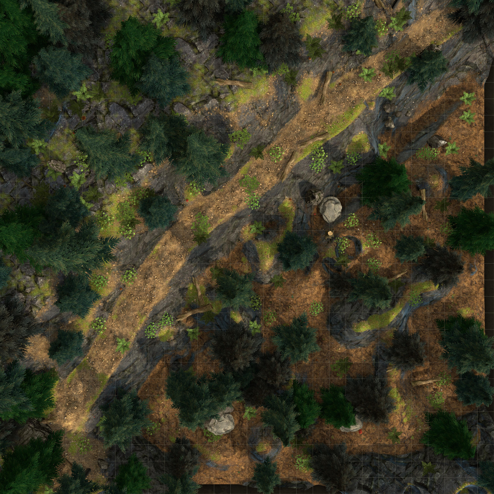
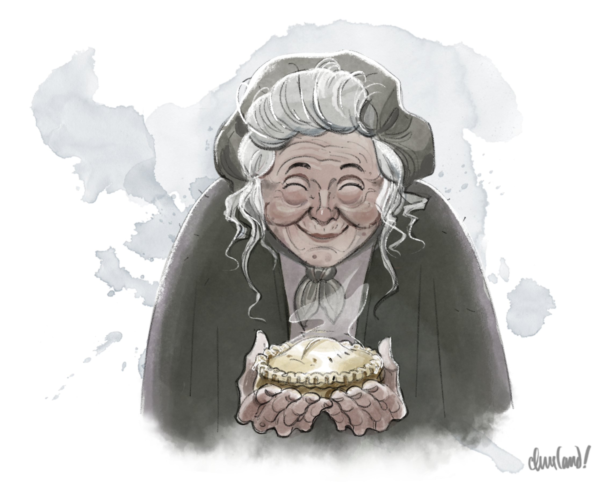
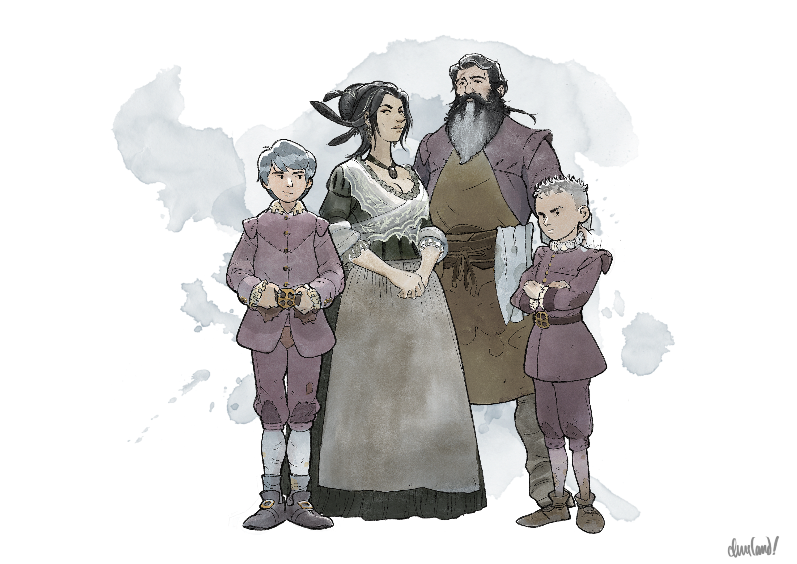
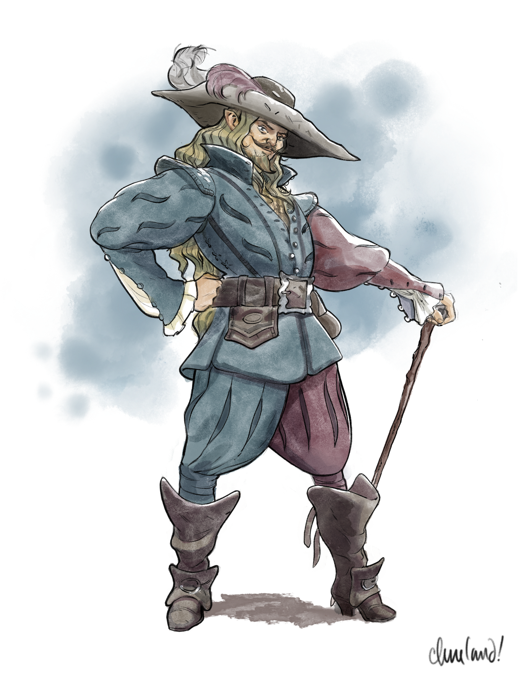

Uma aventura para cinco personagens de 3º nível.
Neste arco, os jogadores partem do vilarejo de Barovia rumo a Tser Pool e à cidade de Vallaki. Enquanto atravessam a floresta, podem encontrar um par de batedores barovianos à procura de uma família desaparecida, distrair ou enfrentar uma horda de zumbis e recuperar um depósito de armas deixado pelo Dr. Rudolph van Richten.
Ao chegarem à Encruzilhada do Rio Ivlis, os jogadores encontram Strahd von Zarovich pela primeira vez, acompanhado de Escher, um de seus consortes vampíricos. Depois de uma conversa tensa, os jogadores podem seguir para o norte, rumo a Tser Pool.
No caminho para Tser Pool, os jogadores encontram um corvo—a corvo-licantropo Muriel Vinshaw, disfarçada—fugindo de uma strix monstruosa, um espantalho dos céus criado pela bruxa-do-pântano Baba Lysaga. Se os jogadores defenderem Muriel da investida da strix, ela se junta a eles pelo restante da viagem até Vallaki, embora sem revelar sua verdadeira identidade.
Pouco depois, os jogadores finalmente chegam ao acampamento Vistani em Tser Pool. Ali, recebem uma leitura mágica de Tarokka feita por Madam Eva, que prevê a localização de três artefatos que os auxiliarão na luta contra Strahd, bem como a de um aliado destinado a ajudá-los.
Durante a estadia em Tser Pool, os jogadores ouvem histórias Vistani sobre o passado de Strahd e sobre o Símbolo Sagrado de Ravenkind, e também podem conhecer Arturi Radanavich, um Vistana errante que afirma ter conhecido Rudolph van Richten. Ao partirem, recebem ainda uma missão de Madam Eva: comprar um brinquedo em Vallaki para entregar à sua bisneta-sobrinha, Arabelle.
Se os jogadores tiverem a incumbência de escoltar Ireena até a Igreja de St. Andral, em Vallaki, ou se tiverem seus próprios motivos para fazê-lo, eles então retornam à Estrada Velha Svalich pela Encruzilhada do Rio Ivlis, viajando para o oeste através das montanhas. Pelo caminho, encontram um estranho cavaleiro esquelético, um par de covas recentes, um revenante vigilante, a bruxa noturna Morgantha em seu disfarce de mascate, dois bandos de corvos amistosos e um lobisomem acompanhado de sua matilha de lobos famintos.
Ao chegarem a Vallaki, os jogadores podem se hospedar na Estalagem Água Azul. Ali, podem conhecer uma série de personagens pitorescos, incluindo o mestre de circo Rictavio e os filhos de Lady Fiona Wachter. Quando a manhã chegar, os jogadores também podem ter um encontro decisivo com o Barão Vargas Vallakovich e seu brutamontes de confiança, Izek Strazni...
A Estrada de Tser Pool
O mapa de Barovia do módulo mostra uma linha pontilhada que parece ligar o Acampamento de Tser Pool às Cataratas de Tser. Apesar da aparência, Tser Falls (p. 37) deixa claro que isso não é um atalho. Na verdade, essa linha pontilhada é uma trilha que desce até a base das Cataratas de Tser, trezentos metros abaixo da ponte. Em nenhum momento ela se reconecta à estrada principal.
Para viajar do Acampamento de Tser Pool até Vallaki, os jogadores precisarão seguir para o sul, de volta à Encruzilhada do Rio Ivlis, e então tomar a Estrada Velha Svalich rumo ao oeste.
Sem Encontros Aleatórios
Este guia incorpora o material do módulo original de Curse of Strahd apenas por referência. Assim, sempre que os jogadores estiverem viajando, você deve desconsiderar a seção Random Encounters (p. 28), exceto quando um encontro específico for referenciado e incorporado diretamente.
C1. A Floresta Svalich
A jornada do vilarejo de Barovia até a Encruzilhada do Rio Ivlis tem cerca de cinco quilômetros e leva uma hora.
C1a. Os Batedores Barovianos
Enquanto os jogadores viajam, leia:
Vocês partem do silencioso vilarejo de Barovia, a névoa rastejando ao redor de seus pés enquanto vocês entram na Estrada Velha Svalich. Um mar de capim alto e verde-pálido se estende diante de vocês, dos dois lados da estrada, até a margem do Rio Ivlis. O céu acima é de um cinza sem brilho, as nuvens pesadas com a promessa de chuva.
Não demora muito para que vocês avistem, ao longe, a velha ponte de pedra em arco que cruza o rio azul e límpido mais adiante. Ao atravessá-la, vocês se veem numa estrada lamacenta que serpenteia por entre as árvores. O ar é denso com o cheiro de terra úmida e folhas apodrecidas, e as árvores se apertam ao redor, lançando sombras profundas que abrem sulcos escuros sobre a estrada.
Se algum jogador tiver Percepção passiva (Sabedoria) 16 ou mais, ele ouve um farfalhar e vê uma silhueta agachada na vegetação enevoada. Caso contrário, os jogadores simplesmente ouvem uma voz gritar, abafada e difusa em meio à névoa: “Quem vem lá? Identifiquem-se.”
A voz pertence a uma batedora baroviana rude chamada Kereza, acompanhada de um segundo batedor, um homem de fala mansa chamado Korga, que os jogadores já encontraram em Arco B - Bem-vindos a Barovia. Depois de confirmarem que os jogadores não estão transportando Ireena contra a vontade dela, os batedores advertem que os espiões de Strahd são numerosos em toda a Floresta Svalich, incluindo lobos, morcegos e—às vezes—as próprias árvores. (Se perguntados sobre as árvores, os batedores descrevem ter visto vinhas, mudas e touceiras de espinheiro animadas que vagam pela floresta com intenções hostis.)
Se Ireena estiver com os jogadores, ela pode ajudá-los a tranquilizar os batedores, que a reconhecem e a saúdam com respeito silencioso. Os batedores se surpreendem ao ver Ireena se aventurando para fora do vilarejo, mas concordam que Vallaki é provavelmente um lugar mais seguro que Barovia—supondo, é claro, que ela consiga chegar lá em segurança. (Ireena insiste teimosamente, no entanto, que sua jornada é diplomática e humanitária, e que os jogadores são seus escoltas e guarda-costas.)
Os batedores estão à procura da família Lansten: dois pais e três crianças pequenas—uma menina e dois meninos—que desapareceram durante o ataque dos zumbis ao vilarejo e não foram mais vistos. Depois de perguntarem se os jogadores viram seus procurados durante a viagem, os batedores os advertem a não se afastar da estrada, observando que coisas mortas e sombrias espreitam sob as copas das árvores. Kereza e Korga então se despedem respeitosamente.
Pouco depois de os jogadores retomarem a caminhada pela Estrada Velha Svalich, começa uma garoa fina, levantando uma névoa tênue que se arrasta pela vegetação rasteira.
C1b. O Esconderijo de Van Richten
Enquanto os jogadores seguem pela estrada, leia:
Vocês avançam mais fundo na floresta, a estrada lamacenta os conduzindo cada vez para mais longe da civilização. Numa curva do caminho, o rio volta a roçar seu flanco. Aqui, ele é mais largo, as águas escuras e calmas. Vocês veem o reflexo das árvores e da névoa em sua superfície. O som da água que corre baixinho é acompanhado apenas pelo farfalhar das folhas e pelo chuvisco da garoa. Nenhum canto de pássaro rompe o silêncio que paira sobre a floresta.
Ao percorrer este trecho da Estrada Velha Svalich, os jogadores são seguidos por um dos espiões de Strahd: um lobo. (Veja Strahd's Spies, pg. 29 para mais informações.)
Se os jogadores souberam por Doru, na igreja de Barovia, onde fica o depósito de armas escondido de Van Richten, eles podem entrar na floresta ao sul para encontrá-lo. Se o fizerem, leia:
Vocês saem da estrada e entram na mata, cruzando a linha das árvores enquanto seus pés afundam na lama e no solo macio. Fiapos de névoa se enroscam pelo chão à sua volta, e árvores retorcidas erguem os braços sobre suas cabeças enquanto uma luz acinzentada se filtra pela copa. Vocês caminham trezentos passos, pisando de leve sobre o húmus e a bruma, até chegarem a uma clareira, onde a floresta se abre para dar lugar a um carvalho antigo e imponente, cujo tronco negro e nodoso se ergue muito acima dos demais.
Logo vocês percebem, porém, que não estão sozinhos. Cinco figuras se arrastam ou permanecem paradas sem rumo dentro da clareira, as roupas enlameadas e rasgadas, a carne apenas começando a ficar pálida e acinzentada.
As cinco figuras são zumbis. Elas também correspondem às descrições da família Lansten dadas pelos batedores—dois pais, uma menina e dois meninos.
Os jogadores podem tentar atrair os zumbis para longe da clareira; dada a baixa inteligência dos zumbis, isso deve ser razoavelmente fácil. Como alternativa, podem tentar emboscar e atacar os zumbis para destruí-los de uma vez.
Fortitude Morta-Viva
Altere a característica fortitude morta-viva de cada zumbi para o seguinte:
- Fortitude Morta-Viva (1/dia). Se o dano reduzir o zumbi a 0 pontos de vida, ele cai a 1 ponto de vida em vez disso. O zumbi não pode usar esta habilidade se o dano for radiante ou vier de um acerto crítico, se o dano sofrido for 15 ou mais, ou se ele tinha apenas 1 ponto de vida restante.
Se os jogadores chegarem ao carvalho, encontram o depósito de armas de Van Richten exatamente onde Doru disse: num vão aninhado sob as raízes da árvore. O esconderijo em si é um pequeno baú de madeira, destrancado, contendo 20 virotes de besta prateados, uma besta leve, dois kits de curandeiro, dois frascos de água benta e uma poção de cura.
C2. Encruzilhada do Rio Ivlis
Esta cena ocorre no Capítulo 2: Área F.
Quando os jogadores se aproximam desta área, a garoa cessa. Leia:
Logo o rio faz mais uma curva e some de vista, e a floresta escura volta a cercar a estrada. Enfim, porém, as árvores se afastam, revelando um penhasco alto na base de uma encosta enevoada. O ar aqui é frio e úmido, e fiapos suaves de névoa rodopiam ao pé do penhasco.
Os jogadores chegaram à Encruzilhada do Rio Ivlis, que é em grande parte como descrita em River Ivlis Crossroads (p. 35). Não role um encontro aleatório quando os jogadores chegarem.
Esta cena começa de modo semelhante ao descrito em River Ivlis Crossroads (p. 35). No entanto, na primeira vez que os jogadores se puserem a partir rumo a Tser Pool, em vez de verem O Enforcado, eles ouvem o som de uma carruagem ou carroça puxada por cavalos se aproximando em meio à névoa. Quase no mesmo instante em que o som surge, a carruagem negra de Strahd, tal como descrita em Black Carriage (p. 37) e Carriage House (p. 54), aparece.
C2a. A Chegada de Strahd
Os jogadores veem um cocheiro sentado na boleia: o vampiro servo Escher, como descrito em K49. Lounge (p. 70). Se estiver presente, Ireena engasga ao vê-lo, sussurrando que o julgava morto.
E Se os Jogadores Fugirem?
Os jogadores devem ter pouquíssimo tempo para tentar se esconder antes que a carruagem de Strahd apareça. No entanto, se os jogadores tentarem fugir da carruagem para dentro da floresta, os lobos atrozes de Strahd—um para cada jogador, mais Ireena—emergem da névoa atrás deles e rosnam, bloqueando a fuga do grupo.
A carruagem então para. Leia o texto a seguir, modificando-o conforme necessário caso Ireena não esteja presente, e fazendo uma breve pausa após cada parágrafo para dar aos jogadores uma pequena oportunidade de agir ou reagir:
O cocheiro solta as rédeas, desce da boleia e vai abrir a porta lateral da carruagem, curvando-se profundamente. Passa-se um instante—e então um homem desce da carruagem.
Ele é alto, magro e vestido com um refinamento digno de um homem de estirpe aristocrática, quase régia. Uma capa negra está ajustada com esmero sobre seus ombros, presa ao pescoço por um broche vermelho-sangue. Uma espada longa repousa embainhada em seu quadril, o punho polido reluzindo sob a luz fraca. Sua túnica escarlate é trabalhada com desenhos intrincados, e seu cabelo está penteado para trás numa entrada em bico afiada e impecável.
Seus olhos são escuros, e enquanto ele ajeita o rubi em seu pescoço, vocês percebem que suas unhas formam garras longas e elegantes. É só então que vocês notam que sua pele é pálida—de um jeito antinatural—e que seus olhos brilham com uma fome profunda e inteligente.
Se Ireena estiver com o grupo, acrescente:
Ireena recua de súbito, como se tivesse levado um tapa. Ela desvia os olhos do olhar do homem, o corpo inteiro se retesando. "Não olhem nos olhos dele", ela sufoca.
O olhar do homem repousa brevemente sobre Ireena, e ele sorri—embora nenhum calor alcance seus olhos. "Lady Kolyana", ele diz. "Que agradável surpresa." Em seguida, volta o olhar para vocês.
Esteja Ireena com o grupo ou não, acrescente:
"Bom dia", ele diz. "Sou o Conde Strahd von Zarovich—e é um prazer finalmente conhecer os recém-chegados ao meu domínio. Meus amigos me contaram tanto sobre vocês." Seus olhos se demoram sobre cada um de vocês, um a um, avaliando-os como um corte de carne pesado no mercado, uma bugiganga intrigante mas inanimada—uma presa avistada por um predador no mato.
A Profecia de Strahd
No momento em que encontra os jogadores, Strahd está voltando de uma visita à tenda de Madam Eva, no Acampamento de Tser Pool. Achando o poder do Santuário da Floresta difícil de controlar por causa da interferência de Baba Zelenna durante seu sono, ele buscou o conselho de Madam Eva em seus preparativos para a Grande Conjunção. Recebeu a seguinte sina:
- "O Senhor das Trevas—o mestre das sombras, a besta no labirinto que rasga suas próprias correntes."
- "O Seis de Estrelas, o Evocador—o poder que você cobiça, uma força indomada por mãos mortais, crua e selvagem, ardendo em fúria."
- "O Artefato—o objeto que você busca, a chave do poder. O coração da divindade aguarda, mas onde?"
- "A Inocente. Vejo uma donzela de cabelos de corvo e olhos de crepúsculo. Ela é um caminho até o objeto."
- "Mas há outro—o Quebrado. A trilha do sacrifício abre outra porta. O muro que sussurra aguarda seu tributo."
- "Os fios do destino ainda giram. O Sete de Espadas, o Encapuzado, vem em seguida. Estranhos caminham por estas terras—sua presença é um enigma, suas intenções um labirinto. Eles habitam o lusco-fusco, e seu papel ainda não está claro."
- "Mas o Um de Estrelas, o Transmutador, é o último. A mudança chega sobre asas recém-chegadas, o crepúsculo de uma era sobre nós. Quando uma era termina, outra nasce."
Boa parte da profecia de Strahd foi ouvida às escondidas por Muriel Vinshaw, uma corvo-licantropo bisbilhoteira, até que Strahd detectou sua presença e a afugentou. Tanto Muriel quanto Strahd ignoravam que Madam Eva soube da presença de Muriel o tempo todo. Como avatar oculta da Buscadora, Eva mantém um vínculo especial com os corvos-licantropos de Barovia, e deliberadamente prosseguiu com a profecia para permitir que Muriel a escutasse.
Muriel ouviu as cinco primeiras cartas lidas por Madam Eva, mas desconhece as duas últimas. Mais informações sobre Muriel e sua fuga dos lacaios de Strahd podem ser encontradas em C3. A Strix abaixo.
Como Se Divertir Interpretando Strahd
Strahd pode ser um vilão difícil e angustiante de interpretar. Para aproveitar a experiência, em vez de temê-la, considere as dicas a seguir:
- Aproveite a Invencibilidade. Strahd é o único NPC de toda a campanha que (até que obtenham a Espada do Sol) seus jogadores não conseguem ferir de nenhuma forma significativa. Os ataques mais poderosos deles não passam de cócegas. Os insultos mais cruéis apenas o divertem. Entre nas cenas com Strahd sem medo do que os jogadores possam fazer.
- Abrace a Imprevisibilidade. Em todas as cenas anteriores a Arco R - Provações da Montanha, Strahd não tem nenhum objetivo específico, e não ficará decepcionado se os acontecimentos tomarem um rumo diferente do esperado. Livre-se de qualquer obrigação que sinta de fazer a cena terminar de uma maneira específica.
- Explore a Escuridão. Strahd oferece uma oportunidade sem riscos de explorar e saborear emoções mais sombrias, como a arrogância (justificada), a crueldade (silenciosa) e o desprezo (sutil). Saboreie essas emoções e o impacto que elas causam em seus jogadores.
Os Jogadores Se Comportam Mal
Se um jogador agir com grosseria diante de Strahd, ele suspira e responde: "O desrespeito é indigno, ainda mais diante do Senhor da terra da qual vocês não passam de hóspedes. Mas vocês são estrangeiros, ignorantes e confusos. Desta vez, darei apenas um aviso. Temo, porém, que minha misericórdia não dure para sempre."
Na primeira vez que um jogador desrespeitar Strahd depois de receber o aviso, ele sorri, ergue um único dedo e diz: "Um." Os lobos atrozes de Strahd, caso ainda não tenham surgido, saem das sombras e cravam o olhar no jogador insolente.
Na segunda vez que um jogador desrespeitar Strahd, ele balança a cabeça, ergue dois dedos e diz: "Dois." Os lobos atrozes de Strahd se aproximam do jogador insolente e começam a salivar.
Na terceira vez que um jogador desrespeitar Strahd, ele franze a testa. Leia o seguinte:
"Vocês parecem viver o engano de se julgarem especiais", diz Strahd. "Não são. São forasteiros em minhas terras, sem uma única onça de respeito ou de juízo comum. Diverte-me, de tempos em tempos, avaliar o valor daqueles que entram no vale vindos de além das Névoas."
Seus olhos se estreitam. "Mas vocês mesmos se avaliaram, e eu os considerei insuficientes. Não são bravos. Não são astutos. Vocês convidam a morte, e nunca fui de negar aos meus súditos um desejo desses, por mais tolo que seja. Esta última chance eu lhes concedo, de salvar a própria vida—pois não vejo nela valor algum acima do da mais reles criatura que rasteja na lama."
Ele ergue um terceiro dedo. "Na próxima vez que abrirem a boca, meus animais os matarão. Qualquer um que os defenda terá o mesmo destino."
Se o jogador violar o ultimato de Strahd, pause o jogo e fale com o jogador fora de personagem. Deixe claro que Strahd prometeu consequências explícitas, e que as ações do jogador vão desencadeá-las. Deixe claro que o personagem do jogador vai morrer; que o jogador não terá chance de impedir isso; que quaisquer personagens que tentarem protegê-lo também morrerão; que nenhum personagem morto será ressuscitado; e que, se o grupo inteiro morrer, a campanha terminará imediatamente.
Se o jogador confirmar sua decisão, retome o jogo. Os lobos atrozes de Strahd então atacam aquele jogador. Se algum ou todos os demais jogadores não interferirem, Strahd prossegue a conversa com eles, sem se abalar.
Fugindo
Se, em qualquer momento do encontro, os jogadores se puserem a fugir, leia:
De trás de Strahd, vocês ouvem um coro de rosnados baixos e ferozes. Vários pares de olhos reluzem no matagal—cada um deles à altura do ombro de um homem.
Lentamente, das sombras, surge uma matilha de lobos imensos, cada um tão alto quanto um cavalo e duas vezes mais musculoso, medindo quase três metros da cabeça à garupa. O pelo é espesso e cinza-malhado, e a saliva escorre de seus dentes amarelados e afiados.
Eles tomam posição atrás e ao redor de Strahd, flanqueando-o como a guarda de honra de um nobre.
"Vocês precisam perdoar meus animais de estimação", diz Strahd. "Eles podem ser . . . entusiasmados demais ao ver novos amigos."
Os lobos são lobos atrozes, como descritos em Dire Wolves (p. 30). (O número de lobos atrozes na matilha é igual ao número de jogadores no grupo mais Ireena.)
Se os jogadores parecerem precisar de mais persuasão, os lobos atrozes avançam um passo, rosnando com o pelo eriçado. Se os jogadores insistirem em fugir, os lobos atacam.
Desafiando Strahd
Se, em qualquer momento do encontro, um jogador desafiar Strahd ou insistir que ele precisa ser derrotado, Strahd sorri, admite que "nunca foi de recusar um desafio" e convida o jogador a derrotá-lo—aqui e agora—se for capaz. Ele promete não fazer nenhum esforço para detê-lo durante os primeiros trinta segundos do ataque.
Se o jogador recusar, Strahd o descarta como covarde, observando com decepção: "Uma pena. Eu esperava mais." Se o jogador aceitar, Strahd permite que ele o ataque por cinco rodadas completas. Durante esse tempo, cada ataque que o jogador fizer contra Strahd acerta automaticamente, e Strahd falha automaticamente em todos os testes de resistência de Força e Destreza.
Passadas as cinco rodadas, Strahd diz: "Determinação impressionante—ainda que, no fim, inútil." E acrescenta: "Agora, vejamos como você se sai quando o verdadeiro jogo começar."
Assumindo sua forma de Mago, Strahd conjura aperto telecinético (telekinetic grasp) a cada rodada para suspender o jogador no ar acima de si, e conjura cegueira/surdez (blindness/deafness) como reação sempre que o jogador fizer um ataque corpo a corpo contra ele. Na primeira vez que o jogador falhar no teste de resistência contra o aperto telecinético, ele diz: "Escape, se puder." E acrescenta, em tom mais baixo: "Mas, caso se descubra insuficiente, um simples pedido de misericórdia o libertará desse aperto."
Na primeira vez que o jogador for bem-sucedido no teste de resistência contra o aperto telecinético, Strahd aplaude sua tenacidade e então pergunta se ele deseja continuar a luta. (Se quiser, Strahd passa a lutar usando seu statblock completo de Mago.)
Se o jogador pedir para ser solto do aperto telecinético de Strahd, ele o faz sem demora. "A sabedoria está em reconhecer os próprios limites", observa. "Lembre-se deste momento—pois, da próxima vez, talvez eu não seja tão generoso."
Se o jogador for deixado inconsciente pelo aperto telecinético de Strahd, ele se agacha ao lado dele e sussurra: "Você lutou com bravura, mas nem o maior dos guerreiros sobrevive ao inevitável. Descanse agora, consolado por saber que me entreteve." Em seguida, volta-se para o restante do grupo e os convida a cuidar do companheiro ferido.
C2b. A Conversa Começa
Se não for desviado, Strahd cumprimenta cada um dos personagens individualmente—pelo nome, caso seus espiões tenham tido oportunidade de descobri-los e reportá-los a ele. Ao fazê-lo, ele tece um comentário pessoal sobre a espécie de cada personagem, sua classe (se evidente pelo equipamento ou pelas roupas) e/ou sua personalidade (se relatada por seus espiões). Sempre que possível, ele formula cada comentário como um elogio, uma observação solidária ou (com parcimônia) uma ameaça excepcionalmente velada.
Se Ireena estiver presente, Strahd pergunta em seguida se a “Lady Kolyana” os apresentou devidamente ao seu domínio, e se desculpa por quaisquer “histórias de camponês” que seus súditos possam ter contado a respeito dele.
(Ele não nega, contudo, seu ataque ao vilarejo de Barovia, observando apenas que o povo do vilarejo o desafiou num ato da mais alta traição. "Tenho certeza de que vocês concordam que minha resposta foi comedida", diz ele. "Afinal, nenhum senhor toleraria um povoado que alimentasse tamanha sedição. O bom povo de Barovia precisava aprender uma lição. Aquela disciplina foi uma gentileza que poucos outros teriam a bondade de conceder.")
Conforme a conversa avança, Strahd comenta que ouviu "coisas maravilhosas" sobre os feitos dos jogadores em "certa casa antiga na borda do meu domínio". Strahd então faz uma breve referência às ações dos jogadores em Casa da Morte, louvando com sarcasmo o "valor feroz e ardente" deles.
Se os jogadores perguntarem sobre a natureza da Casa da Morte, ou sobre seu papel em trazê-los a Barovia, Strahd sorri friamente e diz apenas: "As almas dos condenados são coisas tragicamente retorcidas. Não se detenham na loucura delas."
Se os jogadores perguntarem sobre o cocheiro de Strahd, ele o apresenta como Escher, "meu cocheiro e copeiro". Escher não responde às perguntas ou comentários dos jogadores e simplesmente permanece de pé, discretamente, ao lado de Strahd.
Pedindo Liberdade
Se os jogadores perguntarem se Strahd os aprisionou em Barovia de propósito, ele nega com sinceridade. Se lhe pedirem que os liberte, no entanto, ele se recusa. "Por que eu os libertaria", diz ele, com um sorriso irônico, "se me diverte fazer o contrário?"
C2c. As Perguntas de Strahd
Durante a conversa, nos momentos em que parecer natural, Strahd faz aos jogadores as seguintes perguntas (em nenhuma ordem específica):
- "Ismark Kolyanovich me desafiou ao obstruir a justiça que impus ao seu vilarejo. Por que eu, como seu senhor, não deveria puni-lo por sua deslealdade?"
- "Reivindiquei Ireena Kolyana e a marquei como minha. Por que eu não deveria levá-la comigo ao Castelo Ravenloft agora mesmo?"
- "Vocês são invasores em minhas terras, e o último forasteiro que entrou em Barovia semeou sedição e traição. Por que eu não deveria eliminá-los agora, para impedir que façam o mesmo?" (A pergunta de Strahd se refere ao Dr. Rudolph van Richten.)
Se os jogadores enterraram os ossos de Walter e deram descanso aos espíritos da Casa da Morte, Strahd faz uma pergunta adicional:
- "Imediatamente antes de entrarem em minhas terras, vocês causaram grande dano a um grupo de servos meus—os ocupantes de certa casa nas fronteiras do meu domínio. Eu contava com aqueles servos para me trazer espécimes de interesse, mas as atividades de vocês os deixaram indisponíveis por tempo indeterminado. Por que eu não deveria puni-los por seus crimes contra eles?"
Strahd apresenta cada uma dessas perguntas como hipóteses. Ao fazê-las, seu tom é inquisitivo, curioso e, no mínimo, um tanto divertido. Se os jogadores se desesperarem diante da perspectiva de responder a essas perguntas, Strahd observa: "Não sou um homem irracional. Se existe alguma razão ou raciocínio que eu tenha deixado escapar, por favor, esclareçam-me."
C2d. As Concessões de Strahd
Enquanto os jogadores tentam responder às suas perguntas, Strahd se delicia em bancar o advogado do diabo, contestando as respostas e cutucando as falhas do raciocínio deles. No fim das contas, porém, se os argumentos dos jogadores forem ao menos razoavelmente bem construídos, Strahd se dispõe a aceitá-los. (Deve ficar bastante claro para os jogadores, contudo, que ele está apenas lhes fazendo a vontade ao aceitar suas respostas.)
Os jogadores podem levar Strahd a fazer as seguintes concessões:
- Ele concorda em relevar as transgressões de Ismark, desde que Ismark não volte a desafiá-lo ou a agir contra sua vontade.
- Ele concorda em permitir que Ireena deixe a Encruzilhada do Rio Ivlis em segurança. (Strahd não concede um período de trégua maior do que esse.)
- Ele concorda em não julgar os jogadores, a menos que ajam diretamente contra sua pessoa.
- Ele concorda em perdoar as transgressões dos jogadores contra o culto da Casa da Morte.
Os jogadores podem arrancar essas concessões usando uma variedade de argumentos, incluindo (mas não se limitando aos) seguintes:
- Os jogadores prometeram a Ismark que escoltariam Ireena até Vallaki e precisam ter permissão para cumprir a palavra dada.
- Os jogadores não tomaram nenhuma ação hostil contra Strahd e merecem a presunção de inocência.
- As ações dos jogadores na Casa da Morte foram em legítima defesa e, portanto, devem ser perdoadas.
Se os jogadores parecerem duvidar da fidelidade de Strahd às suas concessões, ele promete: "Não temam, queridas crianças. Não sou mentiroso. Nós dois sabemos que a falsidade é para os fracos."
Quando os jogadores tiverem respondido a todas as perguntas de Strahd a contento, ele se despede e volta para a carruagem negra.
Enquanto isso, os lobos atrozes de Strahd—um para cada jogador, mais Ireena—saem da floresta, se ainda não o fizeram, e se posicionam ao redor da carruagem. Strahd observa que ele e seus “amigos” voltarão a ver os jogadores—talvez muito em breve. A carruagem e os lobos então partem rumo ao Castelo Ravenloft.
C2e. Deixando a Encruzilhada
Quando os jogadores se puserem a deixar a Encruzilhada do Rio Ivlis depois da partida de Strahd, eles encontram The Hanged One (p. 35). O personagem pendurado na forca deve ser aquele que foi o mais grosseiro com Strahd ou o menos cooperativo com suas perguntas.
C3. A Strix
Na metade do caminho entre a Encruzilhada do Rio Ivlis e o Acampamento de Tser Pool, os jogadores ouvem o som aflito de um pássaro grasnando lá em cima. Um corvo de asas com pontas azuis—reconhecidamente o mesmo corvo que os encontrou no vilarejo de Barovia—então despenca na estrada aos pés dos jogadores, visivelmente ferido. Trata-se, de novo, da corvo-licantropo Muriel, disfarçada e com 1 ponto de vida. Suas asas e seu torso foram perfurados por várias dezenas de farpas de prata, deixando-a incapaz de voar, se regenerar ou se transformar até que sejam removidas.
NPCs Morrendo
Como observado em Monstros e Morte (Player's Handbook, p. 198), NPCs aliados—como Muriel Vinshaw e qualquer outro NPC lutando ao lado dos jogadores—devem cair inconscientes ao serem reduzidos a 0 pontos de vida. Quando isso acontece, eles seguem as mesmas regras de testes de resistência contra morte que os personagens dos jogadores, descritas em Testes de Resistência contra Morte (Player's Handbook, p. 197).
A chegada do corvo é seguida, pouco depois, por um guincho terrível e áspero e pela chegada de uma strix maior: um grande “pássaro” artificial feito de madeira, peles de animais, estopa e centenas de penas negras de corvo.
A strix maior usa as estatísticas de uma mantícora, mas é um construto Médio e tem vulnerabilidade a dano de fogo. Em vez de espinhos de cauda de verdade, o ataque de espinhos de cauda da strix maior dispara uma saraivada de dezenas de minúsculas farpas de prata a partir de suas asas.
 "Greater Strix" de Caleb Cleveland. Apoie-o no Patreon!
"Greater Strix" de Caleb Cleveland. Apoie-o no Patreon!
A strix maior é acompanhada por dois enxames de strix menores (cada um usando as estatísticas de um enxame de corvos, mas com vulnerabilidade a dano de fogo). Cada strix menor é um “corvo” artificial pouco maior que um corvo comum, feito de estopa, palha, gravetos e dentes afiados de pedra.
Combate - A Strix
Nível de Combate: Contundente Nível Esperado dos Personagens: 3 Aliados: Ireena Kolyana (ND 1) Consumo Esperado de PV: 34%
Inimigos:
| 3 Jogadores | 4 Jogadores | 5 Jogadores | 6 Jogadores | |
|---|---|---|---|---|
| Strix Maior | 1 | 1 | 1 | 1 |
| Enxame de Strix Menores | 1 | 1 | 2 | 3 |
Balanceamento:
Se você tiver menos ou mais de 5 jogadores, modifique o encontro das seguintes formas:
| Número de Jogadores | Modificação |
|---|---|
| 3 | Reduza os pontos de vida da strix maior para 46. Reduza seus ataques de espinho de cauda e mordida para 5 (1d6+2) de dano perfurante e seu ataque de garra para 4 (1d4+2) de dano cortante. Reduza o número de enxames de strix menores para um e reduza os pontos de vida do enxame para 16 e seu ataque de mordida para 5 (2d4) de dano perfurante, ou 2 (1d4) de dano perfurante se ele estiver com metade dos pontos de vida ou menos. |
| 4 | Reduza o número de enxames de strix menores para um. |
| 6 | Aumente o número de enxames de strix menores para três. |
Essas abominações foram construídas pela bruxa Baba Lysaga para caçar corvos-licantropos. Estas strix em particular—um presente de Baba Lysaga a Strahd por ocasião de seu despertar—receberam ordens de caçar e matar Muriel, que foi flagrada bisbilhotando a leitura de Tarokka que Strahd recebeu de Madam Eva mais cedo naquela manhã. A strix continua a perseguir Muriel, atacando os jogadores apenas se eles tentarem feri-la ou abrigar Muriel de seu ataque. Ela luta até a morte.
Não Machuque Ireena
Os lacaios de Strahd e aqueles que lhe são leais, incluindo a strix, não atacam Ireena.
Se for resgatada, Muriel permanece com os jogadores até conseguir avaliar as intenções deles. Um jogador pode remover as farpas de prata cravadas em seu corpo e em suas asas com um teste de Sabedoria (Medicina) CD 15; em caso de falha, ela é reduzida a 0 pontos de vida e cai inconsciente. Assim que as farpas forem removidas, porém, a regeneração de Muriel volta de imediato, curando seus ferimentos em questão de segundos.
Muriel Vinshaw
Humanoide Médio (humano, metamorfo), caótico e bomClasse de Armadura 14 (armadura de couro)
Pontos de Vida 63 (14d8)
Deslocamento 9 m, voo 15 m nas formas de corvo e híbrida
| FOR | DES | CON | INT | SAB | CAR |
|---|---|---|---|---|---|
| 10 (+0) | 16 (+3) | 11 (+0) | 13 (+1) | 15 (+2) | 14 (+2) |
Perícias Intuição +4, Percepção +6
Sentidos Percepção passiva 16
Idiomas Comum (não consegue falar na forma de corvo)
Nível de Desafio 2 (450 XP)
Bônus de Proficiência +2
Regeneração. Muriel recupera 10 pontos de vida no início de seu turno se não tiver sofrido dano necrótico ou dano de concussão, perfurante ou cortante de uma arma prateada desde seu último turno.
Imitação. Muriel consegue imitar sons simples que já ouviu, como uma pessoa sussurrando, um bebê chorando ou um animal chilreando. Uma criatura que ouça os sons pode perceber que são imitações com um teste de Sabedoria (Intuição) CD 10 bem-sucedido.
Mergulho. Se Muriel voar pelo menos 6 metros em linha reta na direção de um alvo enquanto desce ao menos 1,5 metro rumo ao solo e, no mesmo turno, acertar esse alvo com um ataque de espada curta, o alvo sofre 7 (2d6) de dano perfurante adicional. Se o alvo for uma criatura, ela deve ser bem-sucedida em um teste de resistência de Força CD 12 ou cai caída.
Ações
Ataque Múltiplo. Muriel faz dois ataques com arma, um dos quais pode ser com sua besta de mão.
Espada Curta. (Apenas na Forma Humanoide ou Híbrida) Ataque com Arma Corpo a Corpo: +5 para acertar, alcance 1,5 m, um alvo. Acerto: 6 (1d6 + 3) de dano perfurante.
Besta de Mão. (Apenas na Forma Humanoide ou Híbrida) Ataque com Arma à Distância: +5 para acertar, alcance 9/36 m, um alvo. Acerto: 6 (1d6 + 3) de dano perfurante.
Bico. (Apenas na Forma de Corvo ou Híbrida) Ataque com Arma Corpo a Corpo: +5 para acertar, alcance 1,5 m, um alvo. Acerto: 1 de dano perfurante na forma de corvo, ou 5 (1d4 + 3) de dano perfurante na forma híbrida. Se o alvo for um humanoide, ele deve ser bem-sucedido em um teste de resistência de Constituição CD 10 ou é amaldiçoado com a licantropia de corvo-licantropo.
Ações Bônus
Metamorfose. Muriel se transforma em um híbrido de corvo e humanoide, em um corvo, ou volta à sua forma humana. Suas estatísticas, com exceção do tamanho, são as mesmas em todas as formas. Nenhum equipamento que ela esteja vestindo ou carregando é transformado. Ela volta à forma humana se morrer.
Reações
Interpor-se. Quando uma criatura que Muriel consegue ver acerta um ataque em outro alvo a até 1,5 metro dela, Muriel pode usar sua reação para sofrer o dano no lugar dele.
Se descobrir que os jogadores pretendem viajar para Vallaki, Muriel os acompanha mantendo o disfarce de corvo, contando com a segurança do grupo até poder relatar suas descobertas a Urwin Martikov, na Estalagem Água Azul. Sob nenhuma circunstância Muriel revela de bom grado sua verdadeira natureza aos jogadores neste momento.
Muriel Incógnita
Enquanto viaja com os jogadores, Muriel procura passar despercebida ao mesmo tempo em que conquista a simpatia do grupo. Na forma de corvo, os jogadores só conseguem se comunicar com ela usando a magia falar com animais (speak with animals), mas ela nega qualquer conhecimento sobre Strahd ou sobre a origem das strix e finge ser um corvo comum e simplório, preocupado apenas com comida e com escapar de predadores. Se perguntarem seu nome, ela se apresenta empolgada como "Azul", e fica cada vez mais teimosa se for interrogada.
Enquanto acompanha o grupo, Muriel pode usar sua característica de imitação para produzir qualquer um dos sons a seguir, provocando os jogadores ou reagindo a eles:
- Assobio. Para sinalizar sigilo ou cautela.
- Ronco. Para sinalizar tédio.
- Risada. Para sinalizar diversão.
- Tilintar. Para indicar a chegada de alguém.
- Estalo (como uma chave girando). Para aplaudir a solução de um problema.
- Trombeta. Para celebrar uma vitória ou conquista.
C4. Tser Pool
Esta cena ocorre no Capítulo 2: Área G.
A jornada da Encruzilhada do Rio Ivlis até o Acampamento de Tser Pool tem cerca de dois quilômetros e meio e leva trinta minutos.
C4a. Chegada a Tser Pool
Esta área é em grande parte como descrita em G. Tser Pool Encampment (p. 36). No entanto, nenhum dos Vistani do acampamento está embriagado, e apenas uma—uma mulher Vistana chamada Eliza—serve de espiã para Strahd (use as estatísticas de uma espiã).
Quando os jogadores entram no acampamento, são recebidos por Stanimir, um velho Vistana que os informa de que a líder do acampamento, Madam Eva, os aguarda, e aponta o caminho para a tenda dela. Stanimir, um velho jovial e espalhafatoso com um brilho travesso no olhar, é em grande parte como descrito em Mysterious Visitors (p. 19). Contudo, ele tem a magia imagem maior (major image) preparada em vez de toque vampírico (vampiric touch).
Stanimir responde de bom grado a quaisquer perguntas que os jogadores tenham sobre os Vistani ou sobre Barovia, conforme descrito em Vistani Lore (p. 27). As únicas exceções são as informações sobre barovianos sem alma, que não existem, e sobre Velho Triturador de Ossos, que Stanimir não menciona. Além disso, Stanimir e os outros Vistani não sabem que um coven de bruxas noturnas se instalou recentemente no velho moinho, que eles conhecem apenas como o Velho Moinho dos Durst. Os Vistani também não mencionam maldições Vistani, que não passam de superstição, e descrevem o interesse de Strahd por Tatyana como "verdadeiro desejo", e não "amor verdadeiro".
Stanimir, contudo, não discute os assuntos de Strahd em Tser Pool. Em vez disso, compartilha sua convicção de que Strahd não voltará tão cedo, e garante aos jogadores que nada do que for discutido no encontro com Madam Eva chegará aos ouvidos do vampiro.
Se os jogadores perguntarem se Strahd recebeu uma profecia de Madam Eva, Stanimir responde que Madam Eva compartilha seus dons livremente com todos—mas que o futuro de cada pessoa é diferente, e muitas vezes difícil de discernir.
C4b. A Tenda de Madam Eva
Esta cena se desenrola em grande parte como descrita em Madam Eva’s Tent (p. 37). Depois de cumprimentar os jogadores, Madam Eva chama cada personagem pelo nome, atribuindo-lhes um ou mais epítetos simbólicos ligados às suas histórias, aos seus objetivos e/ou às suas capacidades.
Perfil: Madam Eva
Informações de Interpretação Ressonância. Madam Eva deve inspirar desconforto pelo conhecimento íntimo que tem do passado dos jogadores, gratidão pela sua dedicação à jornada deles, e conforto por suas previsões confiantes.
Emoções. As emoções mais frequentes de Madam Eva são diversão, solenidade, preocupação e contemplação.
Motivações. Madam Eva quer ver a terra de Barovia curada e livre da corrupção de Strahd.
Inspirações. Ao interpretar Madam Eva, canalize a Anciã (Doutor Estranho) e as Moiras (Hércules).
Informações de Personagem
Persona. Para o mundo, Madam Eva parece uma anciã sábia, ainda que enlouquecida, que fala em profecias e enigmas. Para aqueles em quem confia, ela é uma senhora gentil, ainda que exasperantemente obscura e teimosa.
Moral. Numa luta, Madam Eva insistiria calmamente que seu oponente cessasse os ataques e então—se seus auxiliares Vistani não conseguissem deter o agressor—o enfraqueceria com a magia ferir (harm) antes de exigir sua rendição.
Relações. Só Madam Eva sabe que é um avatar da Buscadora.
Ela agradece aos jogadores por terem feito a viagem até Tser Pool. Se perguntada sobre a visita de Strahd, diz apenas que o futuro de cada um pertence a ele mesmo, e que, embora seu dever a obrigue a buscar os sussurros do Destino para qualquer um que invoque seu nome, ela é obrigada a não revelar o que vê a mais ninguém.
Se Muriel estiver com os jogadores na forma de corvo, Madam Eva a observa com uma emoção que quase se parece com ternura e pede para examiná-la. Ela acaricia as asas de Muriel e comenta que, muito tempo atrás, teve um corvo de estimação muito querido chamado Turul.
“Só o vi uma vez nestes últimos dez anos, no entanto”, acrescenta Eva, com certa tristeza. “Sem dúvida, ficou selvagem sem mim.” (Madam Eva se refere à Roca do Monte Ghakis, que a servia quando ela ainda portava o manto da Buscadora das Três Damas.)
Se os jogadores perguntarem a Eva sobre o cadáver de Dalvan Olensky, ela conta apenas que se tratava de um baroviano chamado Dalvan Olensky, que veio à sua tenda logo depois do cerco de Strahd ao vilarejo de Barovia, e que ele insistiu em ouvir—e então desafiar—seu destino, uma escolha de consequências trágicas. (Assim como no caso de Strahd, Eva não pode revelar a natureza nem o conteúdo da profecia de Dalvan.)
Se os jogadores pedirem que Eva leia a sorte deles, ou solicitarem sua orientação sobre como derrotar Strahd, o rosto dela se ensombrece e ela diz: "Vocês estão à beira de um precipício cuja base ainda não conseguem enxergar. Compreendem o que estão me pedindo?"
Independentemente da resposta dos jogadores, Madam Eva responde, balançando a cabeça: "Não farei isso por vocês—ainda não. Se desejam seguir esse caminho, porém, venham à encruzilhada do Rio Ivlis à meia-noite de hoje. Estarei esperando lá, junto à forca. Venham sozinhos—e não deixem que os sigam." Madam Eva se recusa a dar detalhes, e dispensa os jogadores de sua tenda se eles tentarem protestar.
Enquanto os jogadores se preparam para sair, Madam Eva faz uma pausa e fecha os olhos, que logo se arregalam de novo. Leia:
A voz de Madam Eva é um sussurro sibilante, sua silhueta dançando à luz trêmula das velas. "Uma sombra se aproxima da minha tenda: um servo solitário da Escuridão. Buscam conhecimento sobre o futuro de vocês—segredos que jurei jamais revelar a ninguém além de seus donos.
“Não olhem, criança, nem corram para cumprimentá-los; se descobrirem as verdadeiras aspirações de vocês, tudo pode estar perdido. Não revelem sequer que conhecem a verdadeira natureza deles, pois o mestre dessa criatura saberá que eu contei, e sua ira cairá sobre todos nós.
C4c. Hospitalidade Vistani
Ao sair da tenda de Madam Eva, os jogadores encontram outros dois Vistani esperando do lado de fora: uma mulher chamada Eliza e um homem chamado Arturi Radanavich. Stanimir se junta ao grupo poucos instantes depois.
A menos que os jogadores intervenham, a conversa se desenrola assim:
- Eliza cumprimenta os jogadores de imediato, dando-lhes as boas-vindas calorosas ao Acampamento de Tser Pool.
- Quando Stanimir se aproxima, Eliza estala a língua e o repreende pela falta de hospitalidade, observando que os jogadores parecem ter viajado uma longa distância.
- Stanimir, divertido, lembra a Eliza que o destino não espera por ninguém, mas ainda assim convida os jogadores a descansar os pés cansados junto à fogueira central do acampamento, oferecendo vinho, comida e canções caso aceitem.
- Se os jogadores aceitarem e forem acompanhar Stanimir, Arturi hesita e então pergunta se se importariam que ele os acompanhasse. Ele comenta ter ouvido que acabaram de chegar de Barovia, e que está curioso por notícias do vilarejo. (Acrescenta, um tanto sem jeito, que faz algum tempo desde a última vez que dividiu uma fogueira Vistani, e pede desculpas por se impor a eles e aos demais.)
Arturi e Eliza
Arturi Radanavich, um Vistana amaldiçoado, chegou ao acampamento de Tser Pool duas semanas depois do redespertar de Strahd. (Veja A Maldição de Arturi Radanavich, abaixo, para mais informações sobre a presença de Arturi em Barovia e sua ligação com o Dr. Rudolph van Richten.) Arturi é um homem quieto e de fala mansa perto dos quarenta anos, de semblante distante, quase distraído, e de uma sinceridade quase dolorosa.
Já Eliza, uma das espiãs de Strahd, ouviu dizer que forasteiros vindos de além das Névoas chegaram ao lago, e espera recolher informações sobre os objetivos, capacidades e fraquezas deles. (Eliza esperava também escutar às escondidas a leitura de Tarokka dos jogadores, mas foi frustrada pela clarividência de Madam Eva.)
Em nítido contraste com Arturi, Eliza é uma mulher alegre e agitada por volta dos trinta e poucos anos, sempre disposta a se meter numa conversa com um comentário atrevido ou espirituoso.
A Maldição de Arturi Radanavich
Começos Sombrios. Vinte anos atrás, quando Arturi Radanavich tinha apenas dezessete anos, vários membros de sua família estendida na caravana Radanavich o convidaram para uma “caçada”. Desajeitado, solitário e desesperado por pertencer a algo, Arturi aceitou o convite com gratidão.
Não demorou muito, porém, para que Arturi descobrisse a verdadeira natureza daquela caçada. Sua tia, Madame Irene Radanavich, líder da caravana, tinha visto pouco antes seu filho, Radu, gravemente ferido. Quando os tratamentos dos Vistani se mostraram inúteis, Madame Radanavich levou Radu a um curandeiro de um vilarejo próximo—um médico chamado Rudolph van Richten. Radu, no entanto, morreu sob os cuidados de Van Richten, e uma Madame Radanavich vingativa e enlutada resolveu devolver aquela dor a Van Richten.
Arturi se sentiu perplexo e assustado—mas, cada vez que pensava em abrir a boca, imaginava os insultos e as zombarias dos primos ou o olhar fulminante da tia Irene. E assim Arturi assistiu em silêncio enquanto sua família sequestrava Erasmus, o filho de catorze anos de Van Richten, o levava para um pântano tenebroso e o vendia ao senhor vampiro Barão Metus. Os Radanavich então fugiram pelas Névoas—rumo a Barovia.
Não demorou muito depois da venda de Erasmus para que Van Richten rastreasse a caravana Vistani, emboscando os d’Avenir—um casal Vistani que então viajava com os Radanavich e havia ajudado Madame Radanavich em sua vingança—e exigindo saber para onde seu filho fora levado. Arturi soube depois que Van Richten poupou a vida dos d’Avenir—uma clemência que não duraria para sempre.
Três anos mais tarde, Van Richten voltou, de rosto duro e cercado por uma horda de mortos-vivos famintos. Seu filho Erasmus havia morrido—transformado em vampiro servo e morto pela própria mão de Van Richten. Dilacerado pela fúria e pela dor, Van Richten soltou a horda de mortos-vivos sobre a caravana Radanavich, uivando: “Que os mortos-vivos os levem, assim como levaram meu filho!”
Só Arturi sobreviveu, escondido no baú mágico de sua avó. Quando finalmente saiu, horas depois, encontrou o acampamento destruído, sua família massacrada—e nenhum sinal de Van Richten.
A Maldição de Arturi. Arturi logo descobriu, no entanto, que as palavras vingativas de Van Richten haviam ganhado vida própria, grudando nele como uma mortalha. “Que os mortos-vivos o levem”, prometera Van Richten—e assim fizeram, perseguindo Arturi por onde quer que fosse. Os Vistani o baniram de seus acampamentos depois do anoitecer, chamando-o de mortu, ou “proscrito”, palavra que também pode ser traduzida mais literalmente como “morto-vivo”. Nenhum vilarejo deu abrigo a Arturi; nenhuma muralha de cidade o protegeria.
Por dezoito anos Arturi escapou de seus perseguidores eternos, mesmo enquanto procurava desesperadamente uma forma de se livrar das garras da maldição. Por fim, pouco depois do redespertar de Strahd, ele voltou a Barovia, onde buscou o conselho da vidente Vistana Madam Eva. "Encontre o homem que forjou seus grilhões", disse ela. "O último suspiro dele o libertará."
Desde então, Arturi percorreu Barovia várias vezes em busca de Van Richten. Numa dessas ocasiões, chegou a recuperar um esconderijo de suprimentos, contendo um manuscrito pela metade e um pequeno sortimento de armas. Não conseguiu, porém, localizar o próprio doutor.
Arturi voltou muitas vezes ao acampamento de Madam Eva para desfrutar de sua hospitalidade—mas nunca fica além do anoitecer. Pois os mortos que caminham jamais descansam, e Arturi não ousa levá-los até Tser Pool . . .
Fonte: Wise, David. _Van Richten's Guide to the Vistani._ Wizards of the Coast, 1995.
Se os jogadores se dirigirem à fogueira Vistani, Eliza—e Arturi, se estiver presente—se apresentam. Eliza também pergunta o nome dos jogadores. (Se perguntarem por que ele não dividia uma fogueira Vistani até pouco tempo atrás, Arturi faz uma careta e admite apenas que a situação é complicada.)
C4d. A Fogueira Dançante
Enquanto o anoitecer desce sobre a fogueira, os Vistani servem aos jogadores um jantar de um ensopado reforçado de coelho, batatas, nabos, lentilhas e pastinacas, acompanhado de generosos pedaços de pão sírio. Enquanto comem, Eliza pergunta aos jogadores qual será o próximo destino deles. Se os jogadores disserem que estão indo para Vallaki ou demonstrarem interesse em passar a noite, Stanimir os convida a descansar no acampamento, observando que as estradas podem ser longas e perigosas para além das carroças de Madam Eva.
Se ainda não o tiver feito, Arturi pede aos jogadores notícias de Barovia, perguntando especificamente se encontraram um homem chamado Rudolph van Richten. Se perguntado sobre esse interesse, Arturi comenta em voz baixa que Van Richten é um conhecido seu, e que ouvira recentemente o boato de que ele fora visto viajando para Barovia. (Isso é mentira. Um jogador bem-sucedido num teste de Sabedoria (Intuição) CD 10 percebe que Arturi fala um pouco rápido demais. Arturi não revela a verdade se for confrontado; apenas dá de ombros e diz: "Acreditem no que quiserem acreditar.") Arturi não tem certeza se acredita que Van Richten esteja morto, mas suspeita que ainda viva—nem que seja porque ouviu dizer que o velho é impressionantemente difícil de matar.
Testes de Intuição
Não convide os jogadores a fazer testes de Intuição por conta própria. Em vez disso, permita que peçam informações sobre a linguagem corporal ou a sinceridade de um NPC antes de convidá-los a rolar.
Depois do jantar, Stanimir informa animadamente aos jogadores que, como convidados de uma fogueira Vistani, agora se espera que joguem o Jogo das Histórias, e pergunta se aceitam. Para jogar, cada participante deve apostar algo, que pode ser um objeto de pequeno valor monetário, intelectual ou sentimental. Cada participante deve então contar uma história capaz de fazer um homem “rir ou chorar”. A cada história contada, os demais participantes do jogo devem adivinhar se a história é verdade, mentira ou as duas coisas. Ao final do jogo, o participante com mais palpites corretos leva o bolo.
Se os jogadores aceitarem o desafio, Eliza, Arturi e Ireena também se oferecem para entrar no jogo. As apostas dos participantes são as seguintes:
- Stanimir aposta um baralho gasto de cartas de Tarokka que pertenceu à sua falecida esposa. (“Já ficaram tempo demais parados e empoeirados na minha carroça”, diz ele com um sorriso triste. “Acho que ela gostaria de vê-los outra vez pelo mundo.”)
- Eliza aposta uma luneta retrátil de latão com um pequeno espelho móvel, que permite ao usuário espiar por trás de esquinas.
- Arturi aposta um curto manuscrito sobre lobisomens escrito pelo Dr. Rudolph van Richten.
- Ireena aposta um prendedor de cabelo de madeira pintada em forma de girassol, que ela usava quando criança.
Dê aos jogadores alguns minutos longe da mesa para planejarem suas histórias antes de o jogo começar.
Reações Junto à Fogueira
Em resposta às histórias dos jogadores, os participantes do Jogo das Histórias votam assim:
- Stanimir, acreditando que há um grão de verdade no coração de toda história, vota sempre Verdade.
- Eliza, que não tem paciência para meias-verdades, alterna entre Verdade e Mentira.
- Arturi, cínico e desconfiado, alterna entre Meia-Verdade e Mentira.
- Ireena, que se afeiçoa rápido ao jogador, alterna entre Verdade e Meia-Verdade.
O Manuscrito de Arturi
O manuscrito de Arturi—escrito pelo Dr. Rudolph van Richten—é manuscrito e tem duas páginas. Intitula-se "Um Estudo sobre a Maldição do Lobisomem", e diz o seguinte:
Os lobisomens estão entre os licantropos mais temíveis, portadores de uma maldição tão antiga quanto aterrorizante. Neles, a aflição da licantropia transforma até o indivíduo mais civilizado numa besta monstruosa, distorcendo as fronteiras entre o homem e a natureza.
Em sua forma humanoide, o lobisomem conserva muitas das características de sua identidade original, salvo por certas nuances, como sentidos aguçados, temperamento explosivo e uma estranha preferência por carnes malpassadas. Com o tempo, traços sutis que insinuam sua natureza animalesca começam a se manifestar. Ainda assim, é nas formas de lobo e híbrida que o verdadeiro horror da maldição se revela. A forma híbrida de um lobisomem é particularmente aterrorizante: um corpo humanoide musculoso coroado pela cabeça de um lobo faminto. É capaz de empunhar armas, embora seus meios de ataque preferidos sejam as garras devastadoras e a mordida poderosa.
Os lobisomens costumam abandonar a civilização logo após sua transformação. Aqueles que rejeitam a maldição fogem com medo de ferir seus entes queridos, enquanto os que a aceitam temem ser descobertos e as consequências de seus atos violentos. Nos ermos, formam matilhas, vivendo em harmonia tanto com lobos comuns quanto com lobos atrozes.
O aspecto mais trágico da licantropia é sua transmissão. Um humanoide pode contrair essa maldição por meio de um ferimento infligido por um licantropo ou por herança, caso um ou ambos os pais sejam licantropos.
Os amaldiçoados têm dois caminhos: podem resistir à besta interior ou abraçá-la. Os que resistem carregam uma tensão infindável—até que a lua cheia nascente desencadeie uma transformação compulsória e horrenda. Esses indivíduos costumam ter sonhos sangrentos e assombrosos: ecos da carnificina cometida em sua loucura.
Algumas almas distorcidas, no entanto, optam por aceitar sua natureza bestial. Com o tempo, conseguem dominar suas capacidades, invocando à vontade a resistência e a força do lobo. Para tanto, porém, precisam antes realizar um ato particularmente medonho e imundo—que me recuso a descrever nestas páginas.
Uma forma segura de identificar um indivíduo afligido é a presença de uma ferida perpetuamente viva e sangrenta: a cicatriz da transmissão inicial da maldição. Essa ferida nunca cicatriza por completo até que a maldição seja removida.
Além dessa marca, contudo, tais criaturas possuem uma resistência extraordinária. Os métodos convencionais de dano se mostram ineficazes para subjugar permanentemente um lobisomem. Somente pela mordida da prata ou pelo frio do poder da morte um lobisomem pode ser verdadeiramente aquietado.
Uma magia de remoção também pode curar um licantropo afligido, embora aqueles que aceitaram a besta possam resistir com amargura. Quanto às pobres almas nascidas sob a maldição, estão condenadas a carregar sua aflição por toda a vida. Até onde minha pesquisa alcançou, não existe cura nem descanso para esses indivíduos. Estão presos numa luta eterna, para sempre assombrados pelo lobo interior.
A História de Stanimir
Stanimir vai primeiro, contando a mesma história descrita em The Dancing Fire (p. 20). No entanto, exclua o parágrafo final e termine com a frase: “A figura na fogueira dançante derrota seu último inimigo e então se dispersa numa nuvem de fumaça e brasas.” Durante toda a narrativa, os jogadores podem perceber Stanimir usando a magia imagem maior para criar as formas nas chamas.
Quando a história terminar e todos os participantes tiverem dado seus palpites—Ireena, Eliza e Arturi por último, com Ireena votando "Verdade", Eliza votando “Verdade” e Arturi votando “Meia-Verdade”—Stanimir revela que sua história era, de fato, um relato verdadeiro do povo Vistani, e que o príncipe ferido seguiu vivendo como amigo dos Vistani, mesmo quando seu coração foi desviado por sombras e névoa. (Se perguntado, Stanimir admite que o príncipe era Strahd von Zarovich nos dias anteriores à sua chegada a Barovia, e que a promessa dele aos Vistani é a razão de eles permanecerem no vale até hoje, “sem medo e sem favores”.)
A História de Eliza
Depois que um dos jogadores tiver contado a sua, Eliza conta a seguinte história:
“Dizem que dentro de cada corvo esvoaça uma alma perdida, e que o canto de cada corvo narra uma história de eras passadas. Eles sussurram, então escutem com atenção.”
Ela respira fundo; quando volta a falar, sua voz está baixa, com uma qualidade melódica e inquietante.
“Cantem, corvos, de Barovia, parida das névoas e banhada em crepúsculo. Cantem de Lugdana, a firme campeã do Senhor da Manhã, tocada pela aurora, inimiga da escuridão que espreita nas profundezas. O Símbolo Sagrado de Ravenkind, seu testamento radiante, o farol da guerreira de fé inabalável.
“Cantem, corvos, da ascensão de Chernovog, chamado Deus-Verde e Senhor-Demônio sobre Yester Hill. Lugdana, de cabelos grisalhos, cansada da batalha, sua espada longa e seu escudo ainda polidos e prontos. Guiada por entre sombras, rumo ao solo sagrado, ela enfrentou o demônio, numa dança de tempestade.
“Cantem, corvos, da última fúria de Lugdana, do amuleto de Ravenkind ardendo em luz. A maré da batalha virando, o brado bravo de uma heroína, uma investida final com a graça da divindade. O Senhor-Demônio banido, a guerreira tombada, a ferida em seu flanco funda demais para suportar.
“Cantem, corvos, dos últimos instantes da luz, uma sombra descendo do fulgor lá do alto. Cantem do anjo, de penas negras e bico, o anjo do Senhor da Manhã retomando seu dom. O Símbolo reavido, seguro em garras de corvo.
“Cantem, corvos; vocês são os guardiões, os vigias, os contadores das histórias jamais contadas. Cantem, corvos, da memória de Lugdana, das sombras que espreitam e dos heróis por vir.”
Quando a história terminar e todos os participantes tiverem dado seus palpites—Ireena, Stanimir e Arturi por último, com Ireena votando "Meia-Verdade", Stanimir votando “Verdade” e Arturi votando “Mentira”—Eliza revela que sua história era meia-verdade.
Lugdana foi de fato uma paladina do Senhor da Manhã que portava o lendário Símbolo Sagrado de Ravenkind, um amuleto de platina em forma de sol nascente, com um rubi enorme cravado no centro. Segundo a lenda, o símbolo foi dado a Lugdana por um anjo sob a forma de um corvo. Eliza observa com uma risada, porém, que ninguém sabe o que aconteceu com o Símbolo depois que Lugdana tombou em Yester Hill, nem onde ele se encontra hoje.
A História de Arturi
Depois que três dos jogadores tiverem contado as suas, Arturi conta a seguinte história:
Era uma vez uma Raposa, célebre por sua sabedoria e sua destreza, que vivia com seu filhote nos bosques enevoados. Numa noite fria de luar, um casal de Pardais lhe trouxe seu filho, com os tentáculos da Morte já agarrados ao corpinho trêmulo. A Raposa levou o filhote de pássaro para sua toca, mas, apesar de todo o seu conhecimento, não conseguiu curar o mal, e o passarinho deu seu último suspiro entre suas patas.
Enlouquecidos pela dor, os Pardais vingativos, com a ajuda de quatro de seus semelhantes, roubaram o filhote da Raposa durante a noite. Entregaram-no ao Lobo, que havia muito ansiava pelo sabor da carne de raposa. O Lobo devorou o filhote, e os Pardais partiram para voltar ao seu bando.
Quando a Raposa descobriu o que os Pardais haviam feito, a fúria tomou seu próprio coração. Em sua astúcia, ela sabia que os Ratos, em suas tocas sob a terra, sempre haviam detestado os cantos dos Pardais lá em cima. A Raposa desceu ao reino dos Ratos e lhes prometeu uma floresta livre dos cantos dos Pardais. Intrigados, os Ratos aceitaram.
Os Ratos não conseguiriam achar o ninho dos Pardais sozinhos. Mas a Raposa astuta conseguia, e enquanto os Pardais dormiam no oco de um grande carvalho, os Ratos caíram sobre eles para banquetear-se com dentes e garras. Pelos crimes de seis, o bando inteiro pereceu, sem que se poupasse sequer um ovo.
O bosque enevoado está mais escuro agora, e as árvores não cantam mais com os cantos dos Pardais. Mas alguns dizem que os Ratos ainda caçam—que um filhote solitário escapou de suas garras, e que um dia eles o encontrarão e o devorarão como aos outros.
Quando a história terminar e todos os participantes tiverem dado seus palpites—Ireena, Stanimir e Eliza por último, com Ireena votando "Meia-Verdade", Stanimir votando “Verdade” e Eliza votando “Mentira”—Arturi revela que sua história era verdadeira. Ele se recusa educadamente, contudo, a revelar qualquer coisa a mais, observando apenas, com um sorriso triste, que "Uma história não pode ser verdadeiramente contada antes de terminar."
A História de Ireena
Depois que todos os jogadores tiverem contado as suas, Ireena (se estiver presente) conta a seguinte história:
"Quando eu era criança, meu pai levou a mim e ao meu irmão a um lago vasto e tranquilo. Ainda me lembro da areia sob meus pés descalços e do bater das ondas na margem.
"Mas então algo rompeu o silêncio—um rosnado baixo que ecoou pelo vento. Quando me virei, vi uma besta emergir da névoa: um lobo, muito maior do que qualquer um que eu já tivesse visto. Ainda me lembro dos olhos dele—amarelos, frios e famintos.
"Meu pai gritou para eu correr. Disparei rumo à floresta, e o lobo veio atrás, seus rosnados ecoando pelo matagal. Lembro dos galhos me açoitando o rosto, dos espinhos cortando meus pés enquanto minhas pernas ardiam e minha respiração falhava, mas o medo me empurrava adiante.
"Só muito depois, quando meu coração se aquietou no peito e as passadas do lobo se dissolveram no silêncio, foi que finalmente me permiti parar. A essa altura, porém, a floresta me era estranha, e os gritos do meu pai já haviam sumido.
"Uma névoa densa havia descido ao meu redor, e formas sombrias espreitavam em cada canto. Dei um passo à frente, uma das mãos tateando com medo a névoa—e um lobo feito de bruma saltou, as mandíbulas escancaradas para me devorar. E então—tudo ficou escuro.
"A coisa seguinte de que me lembro é de acordar na minha própria cama, com o cantarolar do meu pai vindo da cozinha. Não sei como cheguei lá, nem o que foi feito do lobo, mas ainda consigo lembrar daqueles dentes com toda a clareza."
Quando a história terminar e todos os participantes tiverem dado seus palpites—Stanimir votando “Verdade” e Eliza e Arturi votando “Mentira”—Ireena revela que sua história era falsa. Com uma risada baixa, ela conta que a história é um sonho que tem desde a infância, observando que não há lagos perto do vilarejo de Barovia e que ela nunca tinha visto um lobo atroz até pouco tempo atrás.
Se for questionado sobre seu voto, Stanimir apenas diz, com um sorriso misterioso, que muitos sonhos guardam um grão de verdade. Em seguida, agradece a Ireena por ter compartilhado sua história.
Arturi Parte
Quando o jogo termina, Arturi se despede dos jogadores e deixa o acampamento. Se perguntarem por quê, ele conta, com um sorriso triste, que o acampamento corre perigo a cada instante em que ele se demora ali depois do anoitecer. "Fui egoísta esta noite", murmura, "e forcei minha sorte até onde ousei. Mas não ouso ficar mais tempo, com medo do terror que possa vir atrás."
Um jogador bem-sucedido num teste de Carisma (Persuasão) CD 12 pode convencer Arturi a revelar que os mortos-vivos o perseguem por onde quer que vá, e que o assombram todas as noites nos últimos dezoito anos. "Um homem certa vez jurou que os mortos-vivos me levariam", diz ele. "E, embora ainda não tenham conseguido, jamais deixaram de tentar." Ele se recusa a explicar mais, afirmando com tristeza: "Algumas histórias ferem quem as conta. Por favor, não perguntem mais."
Arturi recusa qualquer oferta de proteção e some noite adentro, acabando por se acomodar entre os galhos de uma árvore alta a três quilômetros do acampamento. Os mortos-vivos então surgem assim:
- Trinta minutos depois da chegada de Arturi, doze zumbis chegam e ficam vagando ao pé da árvore.
- Duas horas depois, cinco carniçais chegam para arranhar e uivar contra o tronco da árvore.
- Duas horas depois, três gasts (ghasts) chegam para se juntar aos carniçais.
- Duas horas depois, quatro corpos anciões (wights) surgem silenciosamente e montam guarda ao redor da base da árvore.
Os mortos-vivos somem na floresta pouco antes do amanhecer.
C4e. Retorno à Encruzilhada do Rio Ivlis
A jornada do Acampamento de Tser Pool até a Encruzilhada do Rio Ivlis tem cerca de dois quilômetros e meio e leva trinta minutos. Jogadores que tentarem esconder seus movimentos de Eliza, a espiã de Strahd no acampamento, precisam ser bem-sucedidos num teste de Destreza (Furtividade) CD 11 ou tomar outra medida discreta para isso.
Viajando até a Encruzilhada
Enquanto os jogadores fazem a viagem até a encruzilhada, leia:
Um céu sem lua não oferece luz alguma à paisagem envolta em névoa lá embaixo. Árvores antigas se erguem dos dois lados da estrada lamacenta, os galhos retorcidos se estendendo como dedos esqueléticos.
À medida que a hora das bruxas se aproxima, uma quietude sinistra se instala. Até as folhas param de farfalhar, deixando o chapinhar de suas botas na lama como único som remanescente.
Se os jogadores não conseguiram esconder a partida, qualquer jogador com Percepção passiva (Sabedoria) 11 ou mais percebe que está sendo seguido. Leia:
O estalo de um graveto corta o silêncio como vidro se estilhaçando. Um arbusto atrás de vocês farfalha—e então cai bruscamente imóvel.
O arbusto que farfalha esconde a bandida Vistana Eliza. Se os jogadores a ignorarem, ela continua a segui-los à distância enquanto se aproximam da encruzilhada. Caso a confrontem, porém, ela reage assim:
Se os jogadores chamarem por Eliza, ela permanece escondida e não responde.
Se os jogadores encontrarem o esconderijo de Eliza, ela sai do matagal com as mãos erguidas em gesto de paz. Ela garante aos jogadores que não queria fazer mal algum, e insiste que os seguiu por curiosidade sobre suas andanças noturnas. "Fora de casa à meia-noite—numa hora em que só os monstros ousam pisar?" ela sussurra, os olhos reluzindo. "Alguém poderia pensar que vocês estão tramando alguma coisa—e uma contadora de histórias sempre precisa de mais histórias."
Eliza espera viajar abertamente com os jogadores até o destino deles. Se recusada, ela "concorda" em voltar a Tser Pool, mas secretamente dá a volta para seguir os rastros do grupo. Se os jogadores tentarem convencê-la de que qualquer tentativa dessas seria inútil e forem bem-sucedidos num teste de Carisma (Intimidação) CD 15, no entanto, Eliza volta a Tser Pool e fica lá pela noite.
Se os jogadores ameaçarem Eliza, ela se rende de imediato, entregando-se à misericórdia deles. Se forem bem-sucedidos num teste de Carisma (Intimidação) CD 15, ela revela que "presta contas ao senhor do castelo". Se perguntarem por que serve a Strahd, seus olhos brilham com um toque de fanatismo enquanto ela afirma, ofegante, que Strahd é—ou deveria ser—o "rei" dos Vistani. "Foi ele quem nos trouxe para casa", sussurra com reverência. "Nós o salvamos da morte e, em gratidão, ele nos salvou do exílio."
O Fanatismo de Eliza
Eliza admite abertamente que poucos Vistani concordam com suas crenças ou com sua lealdade a Strahd—fato que a leva a xingar os "ingratos" e "sem fé" entre eles. Embora não acredite que Barovia seja o lar ancestral dos Vistani, Eliza acredita que seja um novo lar que Strahd encontrou para eles.
Se os jogadores atacarem Eliza, ela tenta fugir para a floresta. Se conseguir, Eliza parte imediatamente de volta ao Castelo Ravenloft e não retorna a Tser Pool naquela noite. Se os jogadores a perseguirem, conduza a perseguição conforme descrito em Chases (Dungeon Master's Guide, p. 252), usando a tabela Complicações de Perseguição em Ermos da seguinte forma:
- Use um enxame de mosquitos-pólvora (usando as estatísticas de um enxame de vespas) para o enxame de insetos
- Use uma debandada de alces assustados para a debandada de animais assustados
- Use uma aranha gigante para a criatura nativa da região
Enquanto foge pela floresta, Eliza tem meia cobertura contra qualquer jogador a 9 metros ou mais de distância, e três quartos de cobertura contra qualquer jogador a 18 metros ou mais.
Se os jogadores tentarem esconder seus rastros de Eliza, eles podem fazê-lo viajando fora da estrada e sendo bem-sucedidos num teste de Destreza (Furtividade) CD 11, seguido de um teste de Sabedoria (Sobrevivência) CD 11. Jogadores que deixarem a estrada dessa forma encontram um fogo-fátuo, como descrito em Will-o'-Wisp (p. 33).
A Marcha dos Mortos
Quando os jogadores chegarem à Encruzilhada do Rio Ivlis, leia:
A trilha bem batida devolve vocês à encruzilhada, escura sob o céu sem lua. Do outro lado da estrada, as lápides envoltas em névoa parecem se encolher na penumbra ao lado da velha forca de madeira, cuja corda puída pende sem vida no ar parado.
Uma silhueta baixa e encapuzada está de pé junto à forca—esperando.
A silhueta é Madam Eva. Ela não responde se a chamarem, e espera que os jogadores se aproximem. Quando o fazem, ela sussurra, a voz raspando como um vento gélido: "O que eu disse a vocês antes de saírem da minha tenda?" Se os jogadores responderem corretamente, Madam Eva acena com a cabeça, certa de suas identidades.
A Fuga de Eliza
Se os jogadores não conseguiram impedir que Eliza os seguisse, ela está escondida atrás de um trecho de mato ao norte da encruzilhada, observando-os em silêncio. Se for o caso, os olhos de Madam Eva se arregalam e ela solta um suspiro brusco. "Tolos!", ela sopra. "Vocês foram seguidos—acabem com ela, ou tudo estará perdido!" Em seguida, aponta para o esconderijo de Eliza.
Assim que for notada, Eliza tenta imediatamente fugir para a floresta, começando com uma vantagem de 9 metros. Se conseguir, Eliza parte imediatamente de volta ao Castelo Ravenloft e não retorna a Tser Pool naquela noite. Se os jogadores a perseguirem, conduza a perseguição conforme descrito em Chases (Dungeon Master's Guide, p. 252), usando a tabela Complicações de Perseguição em Ermos da seguinte forma:
- Use um enxame de mosquitos-pólvora (usando as estatísticas de um enxame de vespas) para o enxame de insetos
- Use uma debandada de alces assustados para a debandada de animais assustados
- Use uma aranha gigante para a criatura nativa da região
Enquanto foge pela floresta, Eliza tem meia cobertura contra qualquer jogador a 9 metros ou mais de distância, e três quartos de cobertura contra qualquer jogador a 18 metros ou mais.
Se Eliza for capturada, Madam Eva insiste que ela seja morta e jogada no Rio Ivlis, "para que não relate ao seu mestre o que viu e ouviu". Se for contestada, Madam Eva responde friamente que "não pode haver meios-termos quando o próprio Destino se equilibra à beira do abismo".
Se for questionada mais a fundo, Madam Eva ergue a mão e então se vira em silêncio para o cemitério sem lápides perto da forca. A Marcha dos Mortos, como descrita em March of the Dead (p. 48), começa pouco depois.
Uma vez iniciada a Marcha, Madam Eva informa aos jogadores: "Cada espírito nesta marcha compartilha um traço em comum. Conseguem imaginar qual?" Se os jogadores responderem corretamente, ela então pergunta: "E para onde vocês supõem que estejam indo?"
Independentemente da resposta dos jogadores, Madam Eva compartilha então as informações sobre a Marcha fornecidas em March of the Dead (p. 48), seja em resposta às perguntas dos jogadores, seja por iniciativa própria assim que a Marcha tiver deixado o cemitério por completo.
"Este é o precipício sobre o qual vocês caminham", ela adverte quando a Marcha se afasta. "Há muitos caminhos nas teias do Destino, mas só consigo ver o que pode ser—não o que será. Posso lhes dizer o que vocês precisam fazer, mas não posso garantir que terão êxito. Pois, se falharem, este será o lugar de descanso de vocês—um lugar sem legado, sem glória e sem amor. Entendem?"
Independentemente da resposta dos jogadores, Madam Eva os encara com um olhar firme. "Se quiserem abandonar esta missão, alma alguma poderia culpá-los. Não há vergonha em fugir de um inimigo que ninguém jamais derrotou. Se quiserem que eu leia o futuro de vocês, posso ler suas mãos, ou olhar dentro da minha bola de cristal. Posso lhes dizer o rosto do seu grande amor, o caminho para a boa saúde na velhice, ou o sucesso que talvez encontrem num ofício." Ela faz uma pausa e acrescenta, a voz quase um sussurro: "Ou posso ler as cartas—e colocá-los num caminho que só termina quando o inimigo de vocês for derrotado—ou vocês forem. A escolha é sua."
Se os jogadores insistirem no desejo de derrotar Strahd, Madam Eva assente. "Muito bem", diz ela. "Então comecemos."
C4f. A Leitura de Tarokka
Uma Nova Profecia
A leitura de Tarokka foi modificada em alguns pontos em relação ao módulo original. Substitua as leituras originais pelas indicadas abaixo onde for apontado.
Madam Eva começa a leitura de Tarokka sentando-se sobre a terra do cemitério, enfiando a mão no manto e retirando três velas velhas, que ela finca no chão e acende com um aceno de mão. Em seguida, retira um baralho de cartas de Tarokka, que deposita no chão entre as velas. Leia:
As mãos velhas trabalhando com destreza, a vidente ancestral separa catorze cartas do topo do baralho, colocando-as de lado. As cartas restantes ela embaralha com agilidade duas, três, quatro vezes.
Enquanto ela embaralha, os jogadores notam uma bolsa de veludo no chão ao lado dela, que não estava ali um instante antes. Madam Eva encara os olhos deles e então dá uma risadinha baixa. "A tarefa que me pedem não é um favor pequeno", murmura. "Em troca, gostaria de pedir um favor meu."
Se os jogadores aceitarem o pedido de Madam Eva ou quiserem saber mais, ela os informa de que a bolsa contém dez peças de ouro. "Minha bisneta-sobrinha, Arabelle, celebrará seu décimo dia do nome daqui a dois dias", diz ela. "Para essa ocasião importante, quero lhe dar um presente—mas, na minha idade, não consigo fazer a viagem eu mesma."
Madam Eva pede aos jogadores que usem o dinheiro da bolsa para comprar um brinquedo para Arabelle na Brinquedos Blinsky, em Vallaki—os brinquedos de Blinsky, ela observa com carinho, são os favoritos de Arabelle—e que entreguem o brinquedo no acampamento Vistani a sudoeste de Vallaki até o meio-dia do dia do nome de Arabelle. Ela acrescenta que os jogadores podem ficar com o troco como pagamento pelo esforço.
Eva acrescenta, com um sorriso enigmático, que os jogadores talvez gostem de conversar com Arabelle, pois ela é “uma criança muito interessante”—e que fazer amizade com a família dela pode ser um presente por si só. (Se os jogadores perguntarem, Eva conta apenas que o pai de Arabelle, Luvash, é o líder do acampamento Vistani de Vallaki, e que o irmão dele, Arrigal, é um "homem perspicaz e inteligente".)
Se os jogadores aceitarem a tarefa de Madam Eva, ela assente com aprovação. Em seguida, começa a leitura de Tarokka. Leia:
Madam Eva coloca os dois baralhos sobre a terra diante de si. Fechando os olhos, ela pousa a mão direita sobre a superfície do baralho maior. As chamas carmesins se apagam e rodopiam em padrões arcanos enquanto seus lábios se movem em silêncio, e uma tensão distante se espalha pelo ar. O som das árvores farfalhando começa a se apagar, o mundo exterior tornando-se mudo e insubstancial à medida que o espaço ali dentro se torna mais sólido—mais real.
Lentamente, com reverência, a anciã tira três cartas do topo do baralho, dispondo-as viradas para baixo, separadas, no chão, com a segunda entre e acima de suas companheiras. Depois passa ao baralho menor, tirando mais duas cartas. A primeira, coloca abaixo das três primeiras, formando uma cruz. A segunda, coloca no centro.
As sombras das lápides ao redor dela oscilam como silhuetas, inclinando-se sobre as cartas como espectadores ansiosos—e, no entanto, o ar do cemitério está perfeitamente parado. Nenhuma luz se intromete além da luz das três velas; nenhuma voz ressoa no silêncio. Sombras e névoa rodopiam além das covas, onde habita a escuridão da noite mais profunda—mas aqui, no centro, a luz ainda reina.
A anciã então leva a mão enrugada até a carta mais à esquerda—a primeira. Ela fecha os olhos e inclina a cabeça, como se escutasse uma palavra não dita. As luzes arcanas rodopiam e então mudam, sua cor virando um azul profundo e penetrante.
"Esta carta fala da história. O conhecimento do que é antigo os ajudará a compreender melhor seu inimigo."
Ela vira a carta.
A luz das velas se transforma em cerúleo e dança sobre a superfície, revelando a ilustração de um guarda de sorriso malicioso olhando para um sacerdote arrogante, os dedos em riste do sacerdote a poucos centímetros do nariz do guarda, enquanto este prepara uma adaga de curva cruel às suas costas. “O Nove de Glifos—o Traidor.” Suas pupilas escuras se movem de um lado para o outro, como se lessem um texto invisível. "Vejo o antigo inimigo de uma casa nobre e ancestral. A alma perdida os levará até ele." (Veja Arco H - A Alma Perdida para mais informações sobre a profecia desta carta.)
Ela move a mão para a segunda carta, esta no topo da cruz. Enquanto fecha os olhos e escuta mais uma vez, a luz das velas se inflama, sua cor explodindo num amarelo intenso e alegre.
"Esta carta fala de uma força poderosa do bem e da proteção, um símbolo sagrado de grande esperança." Ela vira a carta.
Desta vez, a luz revela uma nova ilustração: um guerreiro em armadura segurando uma espada de ferro rachada e um escudo de madeira revestido de couro, o rosto oculto por um pesado elmo de ferro. “O Cinco de Espadas—o Mirmidão.” Seus olhos encaram fundo a escuridão que espreita além da luz das velas. (Veja Swords (Spades), p. 12 para a profecia desta carta.)
Ela move a mão para a terceira carta, no braço direito da cruz, as pálpebras se fechando como num transe, os lábios cerrados em contemplação silenciosa. A luz das velas some, por uma batida de coração—e então retorna numa explosão de branco feroz e ardente, tão puro, forte e límpido que dói olhar, que queima ver—
Os olhos de Madam Eva se abrem de repente, ardendo com uma determinação feroz.
"Esta é uma carta de poder e força. Fala de uma arma de vingança: uma espada de luz solar." Ela vira a carta.
A luz revela uma terceira ilustração: um homem de rosto solene trajando vestes sagradas, uma das mãos segurando a corrente de um turíbulo de bronze que exala fumaça ardente. “O Oito de Glifos—o Bispo.” A voz da anciã é firme e determinada. "O que vocês buscam está numa prisão de âmbar, onde o diabo teme pisar", entoa ela, os olhos se estreitando. "Esta arma está oculta há muito tempo. A casa do dragão caído pode levá-los até lá."
Ela passa para a quarta carta, na base da cruz, e escuta mais uma vez, traçando pequenos círculos sobre o verso enquanto cantarola uma nota contemplativa. As chamas mágicas saltam e dançam sobre os pavios, agora lançando brasas violetas rodopiantes no ar, enquanto as covas ao redor reluzem com um brilho crepuscular.
"Esta carta lança luz sobre alguém que os ajudará imensamente na batalha contra a escuridão."
Ela vira a carta.
Desta vez, a ilustração revelada é a de um cemitério silencioso sufocado pela névoa, com a entrada trancada por uma cerca de ferro pontiaguda. "As Névoas." Madam Eva se inclina para a frente. (Veja Strahd’s Enemy, p. 15 para a profecia desta carta.)
Por fim, ela leva a mão à quinta carta—e quase recua, a testa se franzindo até que as rugas lhe abrem a fronte como uma trincheira. Atrás dela, as sombras cercam a luz das velas até que a luz é quase engolida pelo escuro que avança. Quando volta a falar, a voz áspera de Madam Eva mal passa de um sussurro.
"O inimigo de vocês é uma criatura das trevas, cujos poderes estão além da mortalidade. Quando chegar a hora do julgamento, esta carta os levará até ele!"
A mão dela treme sobre a carta por um instante silencioso—e então dedos ágeis e antiquíssimos revelam o outro lado.
Na escuridão, a quinta e última ilustração mal se distingue por entre a fumaça e a penumbra antinatural. Sobre a superfície da carta habita a imagem de um imperador coroado e sorridente, vestido em trajes reais e estendendo a mão para uma taça de vinho—só que seus membros são membros de marionete de madeira, presos a cordões que desaparecem na escuridão lá em cima.
Madam Eva expira lentamente. "A Marionete." (Veja Strahd’s Location in the Castle, p. 17 para a profecia desta carta.)
Assim que a última sílaba deixa seus lábios, a velha se congela—e então se joga para trás, os olhos revirando até que o branco reluza como pérolas na escuridão—e então ela retorna de súbito, a luz das velas voltando ao seu brilho carmesim comum.
O som do mundo natural retorna—o sussurro do vento entre as árvores, o pio distante de uma coruja e o marulhar longínquo do Rio Ivlis contra as margens. O brilho fraco da luz trêmula das velas volta ao cemitério, e vocês sentem que respiram pela primeira vez desde que a leitura começou.
Madam Eva não diz nada. Apenas os observa em silêncio, com olhos escuros e pesados.
Madam Eva se recusa a detalhar as leituras dos jogadores ou a fornecer qualquer informação ou ajuda adicional. Se lhe pedirem, ela diz apenas: “Os fios do Destino não podem ser chamados como um criado nem conjurados como o truque de um mágico. Vejo apenas o que as cartas me mostram, e nada mais.”
Madam Eva dispensa os jogadores de sua presença assim que conclui a leitura de Tarokka, instruindo-os a voltar a Tser Pool e a "não contar a nenhum servo de Strahd o que acabaram de ouvir".
Madam Eva se recusa a voltar com os jogadores, preferindo se demorar na encruzilhada. Se perguntarem por quê, ela conta apenas que o lugar guarda "memórias especiais" para ela, e que voltará a Tser Pool quando estiver pronta. "Não temam", ela rouqueja, com um brilho divertido no olhar. "Tenho pouco a temer das criaturas que rondam estas matas, garanto a vocês." Se os jogadores deixarem a encruzilhada e voltarem mais tarde, descobrem que Madam Eva desapareceu.
Por Que Madam Eva Fica
Os aventureiros que tentaram matar Strahd não são os únicos enterrados neste cemitério. A mãe de Madam Eva, a Vistana com quem o Rei Barov II teve um caso, está enterrada na mata a pouca distância da forca. (É comum que os Vistani enterrem seus mortos em encruzilhadas, acreditando que isso liberta o espírito para guiar outros que sigam os caminhos que ele um dia percorreu.)
Jogadores Vagando
A exploração nesta campanha é intencional. Os jogadores não encontrarão muita coisa vagando sem rumo; sem pistas claras, descobertas relevantes como o Símbolo Sagrado de Ravenkind ou o Templo Âmbar podem levar dias ou até semanas. Para progredir, os jogadores precisam desencavar pistas e reconhecer os sinais que apontam o caminho.
_Marco_. Receber a leitura de Tarokka completa um marco da história. Quando o grupo deixar a encruzilhada, conceda 500 XP a cada jogador.
C4g. Deixando Tser Pool
Quando os jogadores acordarem em Tser Pool na manhã seguinte, Stanimir os convida a tomar o café da manhã com ele ao redor da fogueira apagada. O desjejum, do qual Arturi participa se puder, inclui polenta de fubá, charutos de repolho recheados e pão frito. (Se a traição dela não tiver sido revelada na noite anterior, Eliza também se junta alegremente aos jogadores no café da manhã.)
Se os jogadores tentarem falar com Madam Eva de novo antes de partir, Stanimir avisa que "a velha" está dormindo e não deseja ser incomodada. Se os jogadores tentarem entrar na tenda dela, encontram-na adormecida sobre um estrado ao lado da mesa.
C5. O Cavaleiro Esquelético
Quando os jogadores voltarem à Encruzilhada do Rio Ivlis depois de receber a leitura de Tarokka, eles encontram um cavaleiro esquelético, como descrito em Skeletal Rider (p. 31), que se aproxima pela estrada oeste e segue rumo ao vilarejo de Barovia. Se os jogadores viram o cadáver de Dalvan Olensky ao entrar em Barovia, percebem que as roupas do cavaleiro são reconhecidamente parecidas com as dele.
Seguindo o Cavaleiro
Se for seguido, o cavaleiro continua a ignorar os jogadores. Depois de percorrer uma curta distância pela estrada, ele vira para o sul numa velha trilha de caça que entra na mata, seguindo-a para leste rumo à fronteira oriental de Barovia. (O cavaleiro perambula ao acaso e não tem destino específico.)
C6. A Torre de Vigia
Enquanto os jogadores viajam para o oeste a partir da Encruzilhada do Rio Ivlis, leia:
Vocês deixam a encruzilhada para trás e retomam a jornada rumo ao oeste. Seguem a estrada enquanto ela faz uma curva e então sobe o penhasco, arrastando-se pela encosta íngreme e pedregosa.
A neblina é densa aqui, encobrindo o topo do penhasco lá em cima. A própria estrada se torna estreita e traiçoeira, com pedras soltas e sulcos profundos que dificultam manter o equilíbrio.
Logo, porém, a estrada se nivela, seguindo adiante e passando por uma torre de vigia de três andares em ruínas, empoleirada na borda do penhasco.
As velhas paredes de pedra da torre estão cobertas de musgo e hera, e sua porta de madeira apodrecida pende das dobradiças. Perto dali, duas covas recentes se apoiam contra a estrada. O cadáver de um animal parece jazer no capim alto não muito longe.
Faça uma pausa para permitir que os jogadores ajam ou reajam. Se os jogadores ficarem calados, siga para C7. A Estrada Alta, abaixo. Caso contrário, deixe que explorem a área.
A Torre de Vigia
A torre de vigia em ruínas foi construída como posto de observação pela Ordem do Dragão Prateado muito tempo atrás. Tem a mesma estrutura da Guard Tower (p. 157) do Tsolenka Pass, com as seguintes mudanças:
- A porta da torre foi meio arrancada das dobradiças e pode ser aberta com facilidade.
- A temperatura e o vento dentro da torre são bem menos severos.
- Não há cabeça de lobo atroz montada acima da lareira.
- Não há estátuas nem esqueletos no alto das ameias.
Se os jogadores explorarem a torre de vigia, encontram um pingente de prata quebrado, entalhado à semelhança de um dragão, caído no chão do primeiro andar, perto da entrada. O pingente está sempre frio ao toque.
Do alto das ameias da torre de vigia, os jogadores conseguem ver as Cataratas de Tser a noroeste e Tser Pool a nordeste. Ao sul, acima e para além das encostas do Monte Ghakis, veem apenas uma parede impenetrável de névoa densa e cinzenta.
As Covas
As duas covas guardam os restos de dois refugiados barovianos mortos por lobos durante a viagem a Vallaki algum tempo atrás. Um teste de Sabedoria (Sobrevivência) CD 12 revela que as covas não têm mais do que algumas semanas.
Pequenos seixos foram dispostos na terra sobre cada cova para formar a imagem de um sol nascente.
O Cadáver
O cadáver pertence a um lobo morto por lanças e virotes de besta, e já apodreceu quase por completo. Os refugiados barovianos o deixaram aqui depois de matá-lo e afugentar os outros membros da matilha.
C7. A Estrada Alta
A jornada da Encruzilhada do Rio Ivlis até as Cataratas de Tser tem cerca de doze quilômetros, ou duas horas e meia.
C7a. A Ravina
Enquanto os jogadores seguem pela estrada, leia:
Vocês seguem pela sinuosa estrada da montanha, os picos recortados se erguendo ameaçadores por entre a névoa, lá no alto.
O ar esfria à medida que a estrada atravessa uma floresta escura de coníferas, com a copa densa bloqueando de novo boa parte da luz fraca do céu. Aqui, a estrada se estreita, com as bordas passando sobre encostas íngremes e rochosas enquanto contorna um contraforte da montanha. Os únicos sons que os acompanham são o estalar das folhas caídas e um farfalhar ocasional no matagal.
Se um dos jogadores tiver Percepção passiva (Sabedoria) 14 ou mais, ou se um dos jogadores for bem-sucedido num teste de Sabedoria (Percepção) CD 14, acrescente:
Enquanto seus passos chapinham na velha estrada lamacenta, vocês vislumbram um lampejo de movimento no sub-bosque: um vulto de pelo cinzento, olhos âmbar e dentes brancos e afiados. Então, tão rápido quanto apareceu, some, esgueirando-se de volta para as sombras.
O movimento pertence a um lobo, que recua rapidamente para a mata. Seus cinco companheiros de matilha, também lobos, não estão longe, mantendo uma distância de sessenta metros enquanto seguem os jogadores pela floresta.
Se os jogadores prosseguirem, leia:
Quando a estrada contorna a borda da montanha, os penhascos da direita desaparecem, deixando uma queda a pique até uma ravina arborizada lá embaixo. A estrada, agora com pouco mais de três metros de largura, faz uma curva mais adiante, contornando essa ravina antes de despencar dramaticamente e serpentear ao redor de um pico menor.
Se um dos jogadores tiver Percepção passiva (Sabedoria) 14 ou mais, ou se um dos jogadores for bem-sucedido num teste de Sabedoria (Percepção) CD 14, acrescente:
Vocês veem três sombras de pelo cinzento cruzarem o matagal à frente. Mais três tremeluzem no canto do olho, logo atrás de vocês.
Se um dos jogadores tiver Percepção passiva (Sabedoria) 18 ou mais, ou se um dos jogadores for bem-sucedido num teste de Sabedoria (Percepção) CD 18, acrescente:
Mais dois espreitam na ravina, quase quinze metros abaixo, acompanhando o ritmo de vocês enquanto se agarram às sombras dos rochedos.
Se os jogadores pararem, avançarem ou atacarem, os seis lobos da mata atacam. Leia:
Seis sombras rosnando saltam do matagal, presas à mostra e garras estendidas!

Combate - Os Lobos
Nível de Combate: Sangrento Nível Esperado dos Personagens: 3 Aliados: Muriel Vinshaw (ND 0), Ireena Kolyana (ND 1) Consumo Esperado de PV: 58%
Inimigos:
| 3 Jogadores | 4 Jogadores | 5 Jogadores | 6 Jogadores | |
|---|---|---|---|---|
| Lobos | 3 | 4 | 8 | 1 |
| Lobisomens | 0 | 0 | 0 | 2 |
Balanceamento:
Se você tiver menos ou mais de 5 jogadores, modifique o encontro das seguintes formas:
| Número de Jogadores | Modificação |
|---|---|
| 3 | Reduza o número de lobos para 3. |
| 4 | Reduza o número de lobos para 4. |
| 6 | Reduza o número de lobos para 1 e aumente o número de lobisomens para 2. |
Substitua o ataque de mordida dos lobos pelas seguintes opções de ação:
- Dilacerar. Ataque com Arma Corpo a Corpo: +4 para acertar, alcance 1,5 m, um alvo. Acerto: 7 (2d4 + 2) de dano perfurante. Em vez de causar dano, o lobo pode agarrar o alvo (CD 11 para escapar).
- Garras. Ataque com Arma Corpo a Corpo: +4 para acertar, alcance 1,5 m, um alvo. Acerto: 6 (1d8 + 2) de dano cortante. Se o alvo for uma criatura, ela deve fazer um teste de resistência de Força CD 11. Em caso de falha, fica caída ou é empurrada 1,5 metro para trás (escolha do lobo).
Os lobos começam na encosta da montanha, com os jogadores entre eles e a ravina. Em combate, os lobos atacam um jogador de cada vez com suas garras, usando suas táticas de matilha para obter vantagem nas jogadas de ataque e na esperança de derrubar aquele jogador no barranco.
Um jogador que cair na ravina despenca 15 metros, sofrendo 17 (5d6) de dano de concussão e ficando caído. Os dois lobos lá no fundo usam seu ataque de dilacerar contra qualquer criatura que caia na ravina, e então a arrastam para longe na esperança de uma refeição fácil. Uma criatura que se agarre à borda rochosa no fundo da ravina tem meia cobertura contra criaturas no alto.
Assim que um jogador cai na ravina, o restante da matilha foge para a mata e então desce até a ravina por outro caminho para ajudar o sexto lobo a arrastar sua presa. A matilha foge se seis dos oito lobos forem mortos.
Descendo Até a Ravina
Um jogador que tente subir ou descer a borda da ravina precisa fazer um teste de Força (Atletismo) CD 10. Se for bem-sucedido, o personagem se move a metade do deslocamento para cima ou para baixo pela borda da ravina, conforme desejar. Com resultado 6-9, o personagem não avança nem recua; com resultado 5 ou menos, o personagem cai e sofre 1d6 de dano de concussão a cada 3 metros de queda, aterrissando caído no fundo da ravina.
Enquanto os jogadores deixam esta área, um jogador com Percepção passiva (Sabedoria) 13 ou mais nota dois lobos, um pouco maiores que os outros, observando-os do alto de um rochedo a leste que se ergue acima da linha das árvores. Um jogador bem-sucedido num teste de Sabedoria (Intuição) CD 20 percebe que os lobos parecem estudá-los com uma inteligência paciente, incomum para um lobo. Os lobos se viram e somem de vista se forem notados ou abordados.
Os Lobos que Observam
Os dois lobos são lobisomens em forma de lobo. Brutamontes sedentos de sangue leais a Kiril Stoyanovich e a Strahd von Zarovich, eles reaparecerão para espreitar os jogadores em C11. A Caçada dos Lobisomens.
C7b. Cataratas de Tser
Esta cena ocorre no Capítulo 2: Área H.
Esta área é em grande parte como descrita em Tser Falls (p. 37). Além disso, quando os jogadores chegam, conseguem ver um revenant (p. 31) parado sozinho no meio da ponte, as mãos apoiadas no pomo da espada, cuja lâmina está firmemente cravada no chão.
 "Bridge Revenant" de Caleb Cleveland. Apoie-o no Patreon!
"Bridge Revenant" de Caleb Cleveland. Apoie-o no Patreon!
A Fúria de Vladimir
Este revenante sem nome foi banido, junto com uma dúzia de seus pares, das ruínas de Argynvostholt pouco depois do fracasso da rebelião de Doru, três meses atrás.
Quando a notícia do contragolpe planejado por Strahd chegou até eles, os cavaleiros da Ordem do Dragão Prateado ergueram a voz, implorando a Vladimir Horngaard que os deixasse emprestar suas espadas à causa.
Vladimir os recusou e, quando os cavaleiros se enfureceram e se tornaram indóceis, baniu-os da mansão e proibiu-os de erguer suas espadas contra Strahd ou qualquer uma de suas criaturas. Agora, apenas Sir Godfrey Gwilym, Vladimir Horngaard e os espíritos dos guerreiros fantasmas que um dia lutaram pela Ordem permanecem em Argynvostholt.
Se os jogadores chamarem esse revenante sem nome ou pisarem na ponte, ele os saúda com voz rouca e pergunta o que fazem ali. Ao ouvir a resposta, diz: "Coisas antigas se agitam, e o senhor do Castelo Ravenloft percorre o vale. Digam-me: vocês o servem?"
Se os jogadores afirmarem servir a Strahd, o revenante enrijece visivelmente, mas se afasta, dizendo com frieza: "Então sigam seu caminho, e que sua obra imunda lhes traga ruína e desespero."
Se os jogadores negarem servir a Strahd, o revenante fica visivelmente aliviado e os convida a se aproximar para que ele possa "olhá-los de perto". Ele se apresenta como cavaleiro da Ordem do Dragão Prateado, mas afirma ter esquecido há muito o nome que teve em vida.
Se as armas dos jogadores estiverem claramente visíveis, ele pergunta se eles se opõem ao senhor do Castelo Ravenloft. Se os jogadores afirmarem se opor a Strahd, o revenante os aconselha a viajar até Argynvostholt, a oeste, onde Sir Godfrey Gwilym aguarda aqueles que estiverem dispostos a erguer suas espadas contra a escuridão que espreita nas profundezas do castelo.
Se os jogadores perguntarem sobre a Ordem do Dragão Prateado, o revenante conta apenas que os cavaleiros da Ordem se opuseram ao senhor de Ravenloft em vida, e sugere que falem com Sir Godfrey para obter mais informações. Se os jogadores tiverem encontrado o pingente de prata na torre de vigia junto à Encruzilhada do Rio Ivlis, o revenante o reconhece, mas se recusa a comentar mais sobre seu significado.
Se os jogadores perguntarem ao revenante por que ele guarda a ponte, ele diz apenas: "Porque ergui minha voz contra meu comandante e fui banido. Agora, permaneço como meus irmãos e irmãs de armas, vigiando os lugares sombrios desta terra e aguardando uma ordem que jamais virá."
Se os jogadores perguntarem por que ele mesmo não pode pegar em armas contra Strahd, ele diz apenas: "Porque meu comandante proíbe, e meu espírito está impedido de desobedecer à vontade dele." Ele se dispõe a contar que o nome de seu comandante é Sir Vladimir Horngaard, mas não quer dizer mais nada, aconselhando os jogadores a falarem com Sir Godfrey.
Segredos de Âmbar
Se os jogadores perguntarem ao revenante sobre as "portas de âmbar" mencionadas na leitura de Tarokka de Madam Eva, ele enrijece e então adverte os jogadores de que estão "mexendo em coisas nas quais não se deve mexer". Se os jogadores garantirem ao revenante que seu interesse nas "portas de âmbar" visa à derrota de Strahd, ele hesita e então informa que está "impedido de jamais revelar os segredos daquilo que um dia guardamos", mas conta que Sir Godfrey pode fornecer a informação que buscam.
O Revenante Preso ao Juramento
Cada revenante da Ordem do Dragão Prateado foi preso pelos efeitos da característica vínculo de juramento de Vladimir Horngaard, que os obriga a obedecer às ordens expressas de Vladimir. Os revenantes da Ordem, com exceção de Sir Godfrey Gwilym, receberam as seguintes ordens:
- Não trair os segredos da Ordem do Dragão Prateado.
- Não erguer arma alguma contra o vampiro Strahd von Zarovich, seus servos ou suas criaturas.
- Não retornar a Argynvostholt.
Um revenante que viole uma dessas ordens sofre os efeitos da magia geas e fica impedido até o início de seu próximo turno por arames negros cravejados de espinhos. (Esse efeito pode ser disparado quantas vezes for necessário por dia. Como os revenantes estão presos aos juramentos que fizeram a Vladimir em vida, esse efeito não pode ser dissipado.)
Se os jogadores pedirem indicações para chegar a Argynvostholt, o revenante os aconselha a seguir "para o oeste, além da cidade murada, e então para o sul, pela trilha cinza-cinza".
Se os jogadores mencionarem a carruagem de Strahd, o revenante manifesta seu asco pela "besta von Zarovich" e recomenda que tenham cuidado com ele e com seus servos e espiões. Se os jogadores mencionarem o cavaleiro esquelético, o revenante conta que "o Errante busca um caminho para a liberdade através das névoas. Jamais conseguirá."
Antes de os jogadores partirem, o revenante os adverte a tomar cuidado com "aqueles que caminham em peles de lobo", que assombram as florestas a oeste. "Antigamente, não incomodavam quem viajava pelas estradas", ele rouqueja. "Algo mudou, porém, e agora a fome deles por carne humana não pode ser saciada." (O revenante não sabe onde fica o covil dos lobisomens, nem tem qualquer outra informação sobre a matilha.)
O revenante não abandona seu posto na ponte sob nenhuma circunstância.
C8. Encruzilhada de Ravenloft
Esta cena ocorre no Capítulo 2: Área I.
A jornada das Cataratas de Tser até a Encruzilhada de Ravenloft tem cerca de dois quilômetros e meio e leva trinta minutos. Enquanto os jogadores fazem essa viagem, leia:
Vocês seguem pela estrada sinuosa, que sobe um curto trecho rumo ao norte antes de virar para oeste para contornar um pico pelado à direita, cujos penhascos escarpados exibem uma fileira de rochas afiadas projetadas sobre a estrada.
Não demora muito para que a estrada volte a virar para o norte, com uma segunda colina emergindo da névoa à esquerda de vocês. Árvores retorcidas pontilham suas encostas íngremes, os galhos se estendendo como dedos nodosos.
À medida que vocês avançam por entre as colinas, a estrada se estreita e os penhascos ficam mais altos. Logo, porém, as colinas se afastam mais uma vez, e a estrada segue adiante rumo a uma pequena bacia sufocada pela névoa.
Esta área é como descrita em Black Carriage (p. 37). (A carruagem de Strahd não está presente, embora os jogadores possam ver sulcos profundos na estrada lamacenta, que saem da Estrada Velha Svalich e entram na velha via de paralelepípedos esparsos que leva ao Castelo Ravenloft.)
A jornada da Encruzilhada de Ravenloft até os Portões de Barovia a oeste tem cerca de quatrocentos metros e leva cinco minutos. Esta área é como descrita em Gates of Barovia (p. 33), mas vista do lado oposto.
Visitando o Castelo Ravenloft
Se os jogadores decidirem visitar o Castelo Ravenloft (por exemplo, para investigar o desaparecimento de Gertruda), a jornada a partir da encruzilhada tem cerca de quatro quilômetros e leva cinquenta minutos. Quando os jogadores chegam, o exterior do castelo é como descrito em Arco P - O Assalto a Ravenloft.
C9. Velho Triturador de Ossos
Esta cena ocorre no Capítulo 6: Área O.
A jornada dos Portões de Barovia até Velho Triturador de Ossos tem cerca de quatro quilômetros e leva quarenta e cinco minutos. Enquanto os jogadores fazem essa viagem, leia:
A estrada segue adiante, passando por um trecho de mata escura. O ar aqui é silencioso como um túmulo, e as árvores permanecem perfeitamente imóveis num silêncio perturbador.
Não muito longe da estrada, aninhada no matagal crescido, ergue-se uma estela de pedra coberta de musgo, com pouco menos de dois metros de altura. Ela se assenta dentro de um círculo de paralelepípedos velhos e rachados, e parece trazer algum tipo de entalhe.
Faça uma breve pausa para permitir que os jogadores ajam ou reajam. Se decidirem investigar a laje, descobrem que ela traz o entalhe rústico de um corvo sobre uma estrela de três pontas gravada, com os sulcos tomados por líquen e musgo. (A laje é um monumento antiquíssimo à Buscadora, e a estrela de três pontas é o símbolo das Três Damas.)
Se os jogadores ficarem calados ou seguirem em frente, leia:
A estrada logo sai da mata mais uma vez, desviando entre duas colinas. Em pouco tempo, faz uma curva rumo ao norte, abraçando a base de uma montanha.
Os jogadores surgem ao pé da colina sobre a qual repousa Velho Triturador de Ossos, como descrito em Approaching the Windmill (p. 125). Não há corvos no moinho nem por perto.
Assim que o moinho fica à vista, os jogadores também notam Morgantha se aproximando na direção oposta com sua carroça, como descrito em Dream Pastries (p. 48).
Esta cena se desenrola em grande parte como descrita em Dream Pastries (p. 48), mas Morgantha vem da cidade de Vallaki, e não do vilarejo de Barovia, e não há nenhuma criança enfiada num saco em sua carroça de mascate.

"Morgantha Disguised" de Caleb Cleveland. Apoie-o no Patreon!Perfil: Morgantha, a Mascate dos Sonhos
Informações de Interpretação Ressonância. No momento em que os jogadores a conhecem, Morgantha deve inspirar lisonja e conforto com seu charme de vovó, gratidão pela disposição em distribuir elogios e "amostras grátis", ternura por suas queixas sobre as agruras cotidianas da vida de uma velha, e uma leve desconfiança diante de sua confiança e tranquilidade ao viajar sozinha por uma estrada perigosa.
Emoções. Morgantha quase sempre parece se sentir alegre, divertida ou pensativa.
Motivações. Morgantha quer manter seu disfarce, tocar seu negócio em paz, fazer com que estranhos se afeiçoem a ela e se sintam à vontade em sua companhia, e encorajar os outros a provar seus doces dos sonhos se parecerem inclinados a isso.
Inspirações. Vovó Cera Weatherwax (Discworld), Minerva McGonagall (Harry Potter), Dra. Kureha (One Piece)
Informações de Personagem Persona. Para o mundo, Morgantha é uma velhinha alegre com paixão por fofoca e por reclamar. Só Morgantha e suas filhas sabem que ela é, secretamente, a matriarca de coração negro de um coven de bruxas noturnas.
Moral. Numa luta, Morgantha tentaria negociar a paz e então usaria sua habilidade de etereidade para escapar para o Plano Etéreo, caso a negociação se mostrasse inútil.
Relações. Morgantha é a mãe das bruxas noturnas Bella e Offalia, e a fornecedora de doces dos sonhos do refugiado baroviano Franz.
Morgantha cumprimenta os jogadores com calor, chamando-os de "viajantes cansados", e diz esperar que a estrada não tenha sido dura demais com eles. Ela compartilha de bom grado as seguintes informações, se perguntada:
- Ela é uma mascate que vende produtos de panificação para o "bom povo de Barovia".
- Está justamente voltando de um dia vendendo suas mercadorias aos moradores de Vallaki e aos "pobres e famintos queridinhos" acampados do lado de fora dos portões. (Este último comentário se refere a um acampamento de refugiados barovianos que não foram autorizados a entrar na cidade.)
- Ela mora no velho moinho colina acima com suas duas filhas, Bella e Offalia. (Ela se recusa gentilmente a contar o que aconteceu com seu "marido", dizendo apenas: "Ora, isso são assuntos de uma velha, para serem contados só se ela quiser.")
Morgantha ainda tem alguns "doces dos sonhos" que sobraram do dia de trabalho—"recheados com a luz e o amor do sonhar"—e os oferece de graça aos jogadores como uma "primeira amostra". Ela avisa que os doces dos sonhos ficam melhores depois de uma refeição quente, "principalmente com um bom vinho para empurrar goela abaixo". (Os doces dos sonhos, se comidos, afetam os jogadores como descrito em Dream Pastries, p. 125.)
Se lhe perguntarem como consegue viajar pelas estradas em segurança, Morgantha apenas sorri e garante aos jogadores que "uma velha tem seus truques". ("Mas", reclama ela, "minhas costas e meus pobres pés reclamam de vez em quando. Mal posso esperar para deixá-los de molho numa bacia de água bem quente quando eu chegar em casa.")
Se os jogadores pedirem para entrar em sua casa, Morgantha se desculpa pela falta de hospitalidade, mas observa que está cansada e, além disso, não está preparada para receber visitas. (Os jogadores são bem-vindos, diz ela, para visitá-la outro dia, se quiserem.)
Quando a conversa perde o fôlego, Morgantha deseja uma boa viagem aos jogadores e avisa que poderão encontrá-la do lado de fora dos portões de Vallaki no futuro, caso queiram comprar mais doces.
Antes de partir, Morgantha adverte os jogadores de que os guardas dos portões de Vallaki estão confiscando moedas de prata e itens de prata visíveis dos viajantes, a título de imposto. "Mas", diz ela, dando um tapinha no nariz com um sorriso atrevido e meio desdentado, "vocês não ouviram isso de mim."
Morgantha Descoberta
Se um jogador perceber a natureza demoníaca de Morgantha, por exemplo usando o sentido divino de um paladino, e a confrontar a respeito, ela faz uma pausa e então o parabeniza pela perspicácia. Em seguida, sorri docemente e observa que não está infringindo lei alguma, perguntando: "É crime ser aquilo que se foi feito?" Se o jogador insistir em atacá-la, ela acrescenta: "E esse crime exige execução imediata?"
Se os jogadores insistirem que sim, ela se ajoelha de imediato, implorando com sarcasmo por misericórdia e por uma chance de se arrepender. "Permitam que eu volte para casa e reflita sobre meus pecados", acrescenta, sorrindo. Se for atacada, ela desaparece usando sua característica de etereidade, gargalhando.
Se os jogadores se aproximarem do moinho, ela avisa Bella e Offalia, que se juntam a ela no Plano Etéreo. Se os jogadores tentarem danificar ou destruir o moinho, as bruxas voltam ao Plano Material e os advertem a parar, sob pena de morte. Veja Morgantha Fica Desconfiada para mais informações sobre o conflito com as bruxas. (No momento, o moinho não contém nenhuma criança, e não conterá até que Arco H - A Alma Perdida comece.)
C10. A Mata Profunda
A jornada de Velho Triturador de Ossos até a Cidade de Vallaki tem cerca de nove quilômetros e leva duas horas. Enquanto os jogadores fazem essa viagem, leia:
A estrada sinuosa do vale abraça a encosta da montanha enquanto serpenteia rumo ao norte. A mata escura se agarra ao lado oposto da estrada, com as árvores altas e retorcidas se aproximando o quanto ousam. Vocês ouvem o som do vento farfalhando entre as folhas e o rangido ocasional dos galhos. De tempos em tempos, quase soa como se as árvores estivessem sussurrando entre si, ou remexendo suas raízes antigas no húmus velho e apodrecido.
À medida que a estrada avança, a floresta a engole dos dois lados. As árvores se erguem muito acima de suas cabeças, bloqueando tudo menos os traços mais tênues de luz cinzenta. O ar fica denso e pesado com o cheiro de musgo e folhas em decomposição; ao longe, vocês ouvem o grasnado gorgolejante de um corvo, seguido do som de asas batendo.
Em pouco tempo, fica claro que a presença de vocês nesta terra desolada não passou despercebida. Um corvo os segue por vários minutos, mantendo uma distância respeitosa.
Este encontro se desenrola como descrito em Swarms of Ravens (p. 32), com o grupo acompanhado por dois enxames de corvos. Se estiver com o grupo e puder voar, a Muriel disfarçada alça voo junto ao bando, mas mantém o olho vivo nos jogadores durante a viagem.
Enquanto os jogadores seguem pela estrada, leia:
Adiante, as árvores ao norte se abrem, revelando um campo gramado. O capim alto ondula no ar gelado, e o campo se estende até alcançar as margens de um lago escuro e distante. A névoa se agarra à orla. Mesmo à distância, vocês ouvem o som fraco da água batendo nas pedras.
Se Ireena estiver com o grupo, ela congela e pergunta aos jogadores se podem fazer um desvio rápido pelo campo até o lago. Se perguntarem por quê, ela diz apenas que o lago parece estranhamente familiar.
O Lago Zarovich é como descrito em L. Lake Zarovich (p. 38), mas sem os barcos a remo encalhados nem o barco de Bluto à vista.
Ao chegar à margem do lago, Ireena observa com apreensão que ele parece ser o mesmo lago que já viu em seus sonhos. (Se ainda não tiver contado, Ireena narra a história de seu sonho, descrita em C4d. A Fogueira Dançante acima.)
Ireena tem certeza, porém, de que nunca visitou este lago com Ismark e seu pai, Kolyan. Ela não sabe o que isso significa, mas fica perdida em pensamentos se um jogador lhe lembrar que seu pai a encontrou vagando pela Antiga Floresta Svalich quando criança.
C11. A Caçada dos Lobisomens
Enquanto os jogadores continuam pela estrada, leia:
Tão rápido quanto surgiu, o campo é engolido pela floresta outra vez, as árvores se fechando ao redor de vocês mais uma vez. A vegetação rasteira escura farfalha e se agita ao vento, e o peso da floresta pressiona de todos os lados. Vocês não conseguem se livrar da sensação de que, de alguma forma, estão sendo observados.
Se um dos jogadores tiver Percepção passiva (Sabedoria) 14 ou mais, ou se um deles for bem-sucedido em um teste de Sabedoria (Percepção) CD 14, acrescente:
Uma sombra humanoide tremula ao longe—e então desaparece de vista.
A sombra pertence a um lobisomem. Seus companheiros—três lobos e mais um lobisomem—espreitam na mata próxima.
Os lobisomens não atacam de imediato, preferindo esperar o momento perfeito para golpear. Se os jogadores continuarem pela estrada, leia:
A estrada da mata os leva por uma pequena clareira arborizada, cuja linha circular de árvores está repleta de moitas densas, pedregulhos cobertos de musgo e cristas escarpadas.
Então, sem aviso, cinco lobos saltam da floresta, olhos amarelos brilhando enquanto seus focinhos se contorcem em rosnados!
Peça aos jogadores, aos lobos, aos lobisomens (em forma de lobo) e, se estiverem com o grupo, a Ireena, os dois enxames de corvos e a Muriel (uma corvo-licantropo em forma de corvo), que rolem iniciativa. Qualquer personagem com Percepção passiva (Sabedoria) inferior a 14 é surpreendido.
Modifique os blocos de estatísticas dos lobos conforme descrito em C7a. A Ravina. Além disso, use o bloco de estatísticas abaixo para os lobisomens, em vez do que consta no Monster Manual:
Lobisomem
Humanoide Médio (Humano, Metamorfo), Caótico e MauClasse de Armadura 11 na forma humanoide, 12 (armadura natural) na forma de lobo ou híbrida
Pontos de Vida 84 (13d8 + 26)
Deslocamento 9 m (12 m na forma de lobo)
| FOR | DES | CON | INT | SAB | CAR |
|---|---|---|---|---|---|
| 16 (+3) | 13 (+1) | 14 (+2) | 10 (+0) | 11 (+0) | 10 (+0) |
Testes de Resistência For +5
Perícias Percepção +4, Furtividade +3
Sentidos visão no escuro 18 m, Percepção passiva 14
Idiomas Comum (não consegue falar na forma de lobo)
Nível de Desafio 3, ou 2 sem sua regeneração
Bônus de Proficiência. +2
Audição e Olfato Aguçados. O lobisomem tem vantagem em testes de Sabedoria (Percepção) baseados em audição ou olfato.
Táticas de Matilha. O lobisomem tem vantagem em uma jogada de ataque contra uma criatura se pelo menos um aliado do lobisomem estiver a até 1,5 metro da criatura e esse aliado não estiver incapacitado.
Regeneração. O lobisomem recupera 10 pontos de vida no início do seu turno. Se sofrer dano necrótico ou dano de concussão, perfurante ou cortante de uma arma prateada, esta característica não funciona no início do próximo turno do lobisomem. O lobisomem só morre se começar seu turno com 0 pontos de vida e não se regenerar.
Ações
Ataque Múltiplo. O lobisomem faz dois ataques: dois com sua lança (forma humanoide) ou um com sua mordida e um com suas garras (forma de lobo ou híbrida).
Mordida (Apenas na Forma de Lobo ou Híbrida). Ataque com Arma Corpo a Corpo: +5 para acertar, alcance 1,5 m, um alvo. Acerto: 7 (1d8 + 3) de dano perfurante. Em vez de causar dano, o lobisomem pode agarrar o alvo (CD de fuga 11). Além disso, se o alvo for um humanoide, ele deve ser bem-sucedido em um teste de resistência de Constituição CD 13 ou é amaldiçoado com a licantropia de lobisomem.
Garras (Apenas na Forma de Lobo ou Híbrida). Ataque com Arma Corpo a Corpo: +5 para acertar, alcance 1,5 m, uma criatura. Acerto: 8 (2d4 + 3) de dano cortante. Se o alvo for uma criatura, ela deve ser bem-sucedida em um teste de resistência de Força CD 13 ou cai caída.
Lança (Apenas na Forma Humanoide). Ataque com Arma Corpo a Corpo ou à Distância: +5 para acertar, alcance 1,5 m ou alcance 6/18 m, uma criatura. Acerto: 6 (1d6 + 3) de dano perfurante, ou 7 (1d8 + 3) de dano perfurante se usada com as duas mãos para um ataque corpo a corpo.
Ações Bônus
Metamorfose. O lobisomem se transforma em um híbrido de lobo e humanoide, em um lobo, ou volta à sua verdadeira forma, que é humanoide. Suas estatísticas, com exceção da CA, são as mesmas em todas as formas. Qualquer equipamento que esteja vestindo ou carregando se funde à nova forma. Ele volta à sua verdadeira forma se morrer.
Em combate, os lobos trabalham em conjunto, usando suas garras para derrubar personagens caídos e, em seguida, usando seu dilacerar para agarrar os alvos caídos. Assim que os lobos arrastarem um personagem agarrado para longe do grupo, os lobisomens voltam sua atenção para atacá-lo com sua mordida. O primeiro personagem visado dessa forma percebe que os lobisomens são um pouco maiores que os outros três e têm olhos inteligentes, perturbadoramente humanos.
Um lobisomem foge se começar seu turno com 20 pontos de vida ou menos e não se regenerar, ou se começar seu turno com 0 pontos de vida por três turnos seguidos. Quaisquer lobos sobreviventes o seguem logo depois.
Se os lobisomens morrerem, eles voltam às suas verdadeiras formas: um rapaz de pele pálida e sardenta e físico esguio e musculoso, e um rapaz corpulento de rosto cruel e cabelo escuro e oleoso. Cada um exibe uma ferida sangrenta, em carne viva e apodrecida na lateral do corpo—a origem de sua aflição licantrópica.
Qualquer jogador que tenha falhado no teste de resistência contra a maldição da licantropia logo percebe que, embora recupere pontos de vida normalmente, a ferida original permanece cosmeticamente sangrenta e em carne viva—exatamente como descrito no manuscrito de Van Richten sobre a maldição do lobisomem. A próxima lua cheia ocorre na noite do sexto dia após a chegada dos jogadores a Vallaki.
Combate - A Caçada dos Lobisomens
Nível de Combate: Opressivo Nível Esperado dos Personagens: 3 Aliados: Dois enxames de corvos (ND 1/4), Ireena Kolyana (ND 1) Consumo Esperado de PV: 84%
Inimigos:
| 3 Jogadores | 4 Jogadores | 5 Jogadores | 6 Jogadores | |
|---|---|---|---|---|
| Lobisomem | 2 | 2 | 2 | 2 |
| Lobo | 1 | 2 | 3 | 4 |
Licantropia em Barovia
Em Barovia, a maldição da licantropia se espalha conforme descrito em Personagens Jogadores como Licantropos (Monster Manual, p. 207). No entanto, um jogador ou outra criatura infectada não recebe automaticamente quaisquer alterações em seus atributos ou em sua Classe de Armadura, nem recebe automaticamente os benefícios do bloco de estatísticas do licantropo (como imunidades ou regeneração).
Em vez disso, uma criatura infectada só recebe os benefícios da licantropia ao se transformar em sua forma híbrida na noite de lua cheia. Durante esse período, a criatura se torna um NPC sob o controle do Mestre até o amanhecer, momento em que perde os benefícios da licantropia.
Uma criatura infectada pode abraçar a maldição da licantropia—e assim obter seus benefícios completos—ao cumprir uma determinada tarefa, dependendo da natureza de sua maldição:
- Um lobisomem infectado deve matar voluntariamente um humanoide inocente, sem medo ou ódio, e devorar sua carne.
- Um corvo-licantropo infectado deve ficar inconsciente ao tentar voluntariamente proteger outro humanoide de uma morte que acredita ser quase certa.
Um licantropo infectado pode ser reconhecido pela cicatriz da ferida que originalmente transmitiu a maldição. A ferida nunca cicatriza por completo, permanecendo em carne viva e sangrenta até que a maldição seja removida.
O filho de dois licantropos possui os benefícios completos da licantropia desde o nascimento, e pode aprender a controlar sua maldição à medida que envelhece. Uma criança nascida com licantropia dessa forma não pode ser curada, exceto por meio de uma magia de desejo (wish).
Por fim, enquanto as brumas permanecerem, o ciclo lunar é acelerado em Barovia: a lua cheia chega a cada duas semanas, em vez de a cada quatro. A primeira lua cheia que os jogadores vivenciam ocorre em 8 de Neyavr—a sexta noite depois de chegarem a Vallaki pela primeira vez.
Curando a Licantropia de um Jogador
Os jogadores podem descobrir com os Martikov da Estalagem Água Azul, com o Dr. Rudolph van Richten, ou com Kasimir Velikov do acampamento vistani de Vallaki, que a próxima lua cheia ocorrerá na sexta noite depois de entrarem em Vallaki pela primeira vez. À medida que a noite da lua cheia se aproxima, os jogadores infectados com licantropia têm pesadelos cada vez mais intensos, além de um apetite crescente por carne crua.
Jogadores infectados com a licantropia de lobisomem poderão buscar uma cura em Arco I - As Muralhas de Krezk depois de conhecerem o Dr. Rudolph van Richten em Arco E - A Vistani Desaparecida. Personagens de classes apropriadas também podem curar a si mesmos e a outros da licantropia lançando remover maldição (remove curse) ao atingirem o 5º nível. (O Padre Lucian, da Igreja de St. Andral em Vallaki, não pode lançar essa magia e, portanto, não pode curar a licantropia.)
Abraçando a Licantropia de Lobisomem
Como observado em Sessão Zero, esta campanha foi desenhada para personagens heroicos, não vilanescos. Por isso, ela é incompatível com personagens que escolham abraçar a licantropia de lobisomem matando e devorando um humanoide inocente. Se um jogador expressar qualquer interesse em fazer isso, avise-o de que abraçar a maldição resultará na transformação de seu personagem atual em um NPC vilão, exigindo que ele crie um novo personagem em seu lugar.
C12. A Cidade de Vallaki
C12a. Os Portões de Vallaki
A estrada continua adiante até a Cidade de Vallaki, majoritariamente como descrito em Approaching the Town (p. 95). No entanto, remova a primeira frase do texto descritivo e acrescente o texto a seguir ao final do primeiro parágrafo:
Mais de uma dezena de tendas esfarrapadas foram montadas encostadas na paliçada. Entre elas, dezenas de pessoas maltrapilhas e esquálidas perambulam ou se sentam junto a fogueiras fracas e sacos de dormir, seus olhares vazios observando em silêncio à medida que vocês se aproximam.
Se os jogadores partiram de Tser Pool naquela manhã, eles chegam a Vallaki ao anoitecer.
Se Ireena estiver visivelmente viajando com o grupo, acrescente:
Alguns deles encaram Ireena com um reconhecimento embotado, mas nenhum ergue a mão em cumprimento ou faz qualquer gesto de acolhimento.
Esta área, o Portão da Manhã, é majoritariamente como descrita em Town Gates (p. 95). As tendas são um acampamento de refugiados barovianos, abrigando aqueles que sobreviveram à jornada desde o vilarejo de Barovia após o cerco de Strahd.
O Acampamento de Refugiados
Se estiver com o grupo, Ireena fica arrasada e enfurecida ao ver o acampamento de refugiados. Ela sugere se encontrar com os refugiados enquanto os jogadores procuram hospedagem na cidade, e promete se juntar a eles depois. Os jogadores podem dissuadi-la com um teste de Carisma (Persuasão) CD 10 bem-sucedido. Caso contrário, Ireena se aproxima de uma das fogueiras de cozinha, sozinha ou—se os jogadores tiverem insistido em acompanhá-la—em companhia deles.
Os membros do acampamento de refugiados, entre eles Emeric, um homem mais velho e melancólico, e Magda, uma jovem tomada pela dor, podem compartilhar as seguintes informações:
- Os refugiados barovianos chegaram aos portões de Vallaki há algumas semanas, mas foram impedidos de entrar. Quando tentaram forçar a passagem pelos portões, os guardas convocaram um homem que chamavam de Izek, que trazia um braço de diabo retorcido e conjurou fogo para repelir os refugiados.
- Desde então, os refugiados montaram acampamento fora das muralhas da cidade, agrupando-se para se proteger e se aquecer. Conseguiram obter algumas necessidades básicas, como as tendas, subornando os guardas dos portões, mas não conseguiram convencer os guardas a permitir sua entrada, nem sequer a chamar o Barão da cidade para discutir sua situação.
- Enxames de morcegos e matilhas de lobos atormentam o acampamento todas as noites desde que chegaram. Felizmente, ninguém morreu ainda, mas vários refugiados ficaram feridos.
- Devido às perdas que sofreram na estrada e à ameaça do Diabo no Castelo Ravenloft, os refugiados não estão dispostos a arriscar a jornada de volta para casa, preferindo esperar até que o Barão recupere o bom senso e lhes permita entrar nas muralhas.
- Cerca de um quarto dos refugiados ficou viciado nos "doces dos sonhos", um alimento vendido pela mascate Morgantha. Esses refugiados buscam uma fuga da miséria e do desespero de sua situação. Quem come um doce dos sonhos cai em transe, como descrito em Dream Pastries (p. 125).
Os refugiados estão perdidos em desespero. Alguns recordam a superstição de que mulheres barovianas ruivas trazem infortúnio, e sugerem que a própria Ireena trouxe uma maldição sobre seu povo. Poucos têm vontade de lidar com ela além disso.
Após sua interação com os refugiados, Ireena fica enfurecida com a insensibilidade do Barão, e jura fazer o possível para garantir a entrada dos refugiados em Vallaki.
Os Guardas dos Portões
Os guardas dos portões agem majoritariamente como descrito em Town Gates (p. 95). Um deles tem uma lança prateada, enquanto o outro carrega uma aljava com uma dúzia de virotes de besta, metade dos quais prateados.
Os guardas exigem que cada pessoa se identifique primeiro. Uma vez identificado, cada jogador deve mostrar os dentes ("Para provar que não são vampiros.") e ser brevemente exposto a um colar enfeitado com bulbos de alho ("Para provar que não são lobisomens"). (O Barão informou, incorretamente, a seus guardas que os lobisomens são gravemente alérgicos a alho.)
Os guardas então exigem que cada jogador pague 1 peça de ouro como pedágio para entrar no vilarejo. Os guardas se recusam a aceitar pagamento em nome dos refugiados, aos quais o Barão especificamente proibiu a entrada, alegando preocupações com "doença, desordem e infelicidade maliciosa."
Se os jogadores pagarem o pedágio, os guardas também insistem que cada um abra sua bolsa (ou equivalente) e entregue quaisquer peças de prata em sua posse. (Se os jogadores reclamarem, os guardas garantem que a prata é necessária para produzir as armas prateadas necessárias para defender a cidade dos lobisomens.) Em troca de quaisquer moedas de prata que entregarem, os jogadores recebem uma quantia em moedas de cobre de valor equivalente—menos uma taxa de dez por cento.
Se perguntados sobre hospedagem, os guardas podem compartilhar informações sobre a Estalagem Água Azul, como descrito em Vallaki Lore (p. 96). Os guardas também estão dispostos a fornecer direções adicionais a outros pontos de referência da cidade em troca de um suborno de 1 peça de ouro.
Toda vez que os jogadores passam pelos portões, incluindo a primeira, os guardas acenam com a cabeça e entoam a frase favorita do Barão: "Tudo ficará bem."
O Destino de Gertruda
Se os jogadores perguntarem sobre o destino de Gertruda e fornecerem uma descrição, os guardas dizem, com sinceridade, que não viram ninguém parecido com ela.
Entrando na Cidade
Enquanto os jogadores seguem pela avenida principal de Vallaki, leia:
Vocês deixam a estrada de terra e pisam em ruas de paralelepípedos, a lama manchando suas botas e as bainhas de suas calças. Atrás de vocês, os portões se fecham com um estrondo, e vocês veem os guardas retomarem seus postos por trás deles. Ao longe, dá para ver mais duas figuras portando piques, patrulhando as muralhas enquanto observam a floresta retorcida logo abaixo.
Os beirais dos prédios estão pendurados com bandeiras antigas e tecidos esfarrapados que se agitam e se retorcem na brisa gélida. As bandeiras trazem palavras e ilustrações desbotadas, mas o tempo roubou delas tanto a legibilidade quanto qualquer beleza que um dia possam ter tido.
Uma luz de vela trêmula perdura atrás das janelas fechadas dos sobrados, e sombras humanoides se movem por trás de cortinas cerradas. Sombras compridas espreitam nos becos, onde a grama cresce alta e retorcida sob a madeira manchada e cedente dos prédios acima.
As ruas estão vazias, embora vocês consigam ver uma única figura encapuzada seguindo estrada central adentro, longe de vocês. Ao longe, além das muralhas, um lobo solitário uiva, e uma rajada fria de vento corta a noite como uma faca.
A figura encapuzada é Willemina Rikalova, como descrita em St. Andral's Church (p. 97). Ela está a caminho da igreja para rezar pela liberdade de seu filho, Udo Lukovich.
Enquanto os personagens atravessam as ruas, são notados por Ernst Larnak, que os observa atentamente—embora não os siga—como descrito em Lady Wachter's Wish (p. 124). (Ernst ainda não entrega um convite para jantar com Lady Wachter, mas retorna a N4. Wachterhaus (p. 110) para se reportar a Lady Wachter assim que os jogadores saem de seu campo de visão.)
C12b. A Estalagem Água Azul
Esta cena ocorre no Capítulo 5: Área N2.
Esta área é majoritariamente como descrita em N2. Blue Water Inn (p. 98). Se Muriel estiver presente, ela se despede dos jogadores com um trinado suave e sentimental, e então parte para se juntar aos outros corvos que descansam sobre o telhado. (Se os jogadores voltarem depois à estalagem para procurá-la, ela não estará lá.)
Quando os jogadores chegam pela primeira vez, a estalagem contém os seguintes NPCs notáveis:
- Danika Dorakova, que está servindo bebidas e atendendo os clientes em N2c. Taproom;
- Urwin Martikov, que está cozinhando pão e ensopado de beterraba em N2e. Kitchen;
- Brom e Bray Martikov, que estão brincando com brinquedos em N20. Boys' Bedroom; e
- Rictavio, que está contando histórias aos clientes em N2c. Taproom, incluindo Nikolai e Karl Wachter.

"The Martikovs of the Estalagem Água Azul" de Caleb Cleveland. Apoie-o no Patreon!
Perfil: Urwin Martikov
Informações de Interpretação Ressonância. Urwin deve inspirar diversão com seus trocadilhos e piadas ruins, gratidão por seus conselhos e apoio paternais, e conforto por sua compaixão e sinceridade.
Emoções. Urwin costuma sentir diversão, satisfação, alegria, reflexão, preocupação e esperança.
Motivações. Urwin quer criar bem seus filhos, servir os hóspedes com hospitalidade e competência, e ver o povo de Barovia livre da tirania de Strahd.
Inspirações. Ao interpretar Urwin, canalize Vander (Arcane), Greg Universo (Steven Universo) e Linda Belcher (Bob's Burgers).
Informações de Personagem Persona. Para o mundo, Urwin é uma figura paterna bondosa, um homem de família e um anfitrião acolhedor, com um brilho constante no olhar. Para aqueles em quem confia, Urwin é um astuto mestre de espiões e estrategista, com uma esperança feroz pelo futuro de Barovia. No fundo, Urwin teme pelo futuro de seus filhos em um reino governado por Strahd.
Moral. Em um combate, Urwin tentaria imediatamente acalmar a situação e tentaria fugir se não conseguisse—mas não antes de escoltar todos os outros para fora de perigo.
Relações. Urwin é o pai de Brom e Bray Martikov e o marido de Danika Dorakova. Ele também é o filho exilado de Davian Martikov e o querido irmão mais velho de Adrian, Elvir e Stefania Martikov. Além de coproprietário da Estalagem Água Azul, Urwin é o mestre-espião dos Guardiões da Pena.
Perfil: Danika Dorakova
Informações de Interpretação Ressonância. Danika deve inspirar diversão com seu papel de "contraponto sério" nas provocações bem-humoradas com Urwin, gratidão por sua hospitalidade e seus cuidados maternais, e conforto por sua natureza prática e pé no chão e por sua dedicação feroz à família, ao lar e aos hóspedes.
Emoções. Danika costuma sentir afeto, satisfação, cordialidade, determinação, obstinação e carinho.
Motivações. Danika quer manter sua família em segurança, tocar um negócio bem-sucedido e garantir que seus filhos um dia vejam a luz do sol sobre Barovia.
Inspirações. Ao interpretar Danika, canalize Tenzin (Avatar: A Lenda de Korra), Bob Belcher (Bob's Burgers) e Garnet (Steven Universo).
Informações de Personagem Persona. Para o mundo, Danika é uma mulher de negócios prática e sem rodeios, com um coração de ouro. Para aqueles em quem confia, Danika é uma mãe feroz com profunda dedicação ao clã Martikov. No fundo, Danika está sombriamente pronta para defender aqueles que ama—a qualquer custo necessário.
Moral. Em um combate, Danika tentaria rapidamente reduzir a tensão, mas lutaria até a morte para defender sua família ou seus hóspedes.
Relações. Danika é a mãe de Brom e Bray Martikov e a esposa de Urwin Martikov. Além de coproprietária da Estalagem Água Azul, Danika é um membro de alto escalão dos Guardiões da Pena.
Entrando na Estalagem
O taproom é como descrito em N2c. Taproom (p. 100). No entanto, acrescente o texto a seguir ao final da descrição desta área:
Quase uma dezena de vallakianos estão espalhados pelas várias mesas, bebericando canecas de vinho ou tigelas de ensopado reconfortante. Junto à escada, um homem vestido de forma colorida, usando um chapéu emplumado de abas largas, gesticula efusivamente à cabeceira de uma longa mesa, prendendo a atenção fascinada dos vários clientes sentados ali. Vocês ouvem uma onda de risadas percorrer o grupo, seguida de uma salva de aplausos discretos.
O homem é o mestre de cerimônias Rictavio, que é majoritariamente como descrito em Rictavio (p. 238) e N2c. Taproom (p. 100). Dois dos cinco ouvintes em sua mesa são Nikolai e Karl Wachter, que são como descritos em N2c. Taproom (p. 100).

"Rictavio" de Caleb Cleveland. Apoie-o no Patreon!Quando os jogadores entram na estalagem pela primeira vez, Danika, que está servindo as mesas, os cumprimenta e pede que esperem no bar enquanto ela atende outros clientes.
Se os personagens se aproximarem do bar, Urwin sai da cozinha carregando uma bandeja de pão fresco, ensopado quente de beterraba e bifes de lobo, que ele coloca sobre o bar. (A comida tem um cheiro de dar água na boca.) Szoldar Szoldarovich e Yevgeni Krushkin também estão sentados ao bar, e são como descritos em N2c. Taproom (p. 100).
Urwin cumprimenta os jogadores calorosamente e lhes dá as boas-vindas à Estalagem Água Azul. Se os jogadores não direcionarem a conversa para outro rumo, ele observa que eles parecem viajantes e pergunta se precisam de quartos para passar a noite.
Antes que Urwin possa responder aos jogadores, Danika retorna e se desculpa pela demora. Supondo que os jogadores não interrompam, a conversa então se desenrola da seguinte forma:
- Danika acusa Urwin, em tom de brincadeira, de estar tramando alugar quartos aos hóspedes "de graça" outra vez, uma alegação que Urwin nega com bom humor.
- Danika conta aos jogadores que Urwin já deixou outro hóspede ficar de graça e "levaria a estalagem à falência" com tanta generosidade, se ela não estivesse ali para cuidar das contas. (Urwin admite o ponto, com graça.)
- "Afinal", Urwin diz, malicioso, "por que mais eu teria me casado com você?" Com um sorriso, Danika responde: "Um raro momento de bom senso, imagino."
- Danika dá um beijinho no rosto de Urwin e diz: "A mesa perto da janela está com fome." Urwin pisca para os jogadores, pega a bandeja de novo e sai do bar para entregar a comida.
Danika então informa aos jogadores os preços de hospedagem e alimentação, conforme listados em N2. Blue Water Inn (p. 98). (Tanto o quarto de hóspedes grande, N2m. Guest Room (p. 102), quanto os dois quartos de hóspedes pequenos, N2l. Guest Rooms (p. 102), estão disponíveis para aluguel.) Quando Urwin retorna, ele se oferece para anotar o pedido de jantar dos jogadores, supondo que estejam com fome.
Os jogadores então têm alguns minutos para conversar com Urwin e Danika, ou entre si. Durante essa conversa, Urwin e Danika podem fornecer aos jogadores informações sobre Rictavio, o Festival do Sol Ardente (que ocorrerá em cinco dias, ao meio-dia), e o acampamento vistani nas proximidades, conforme descrito em Vallaki Lore (p. 96).
Tanto Urwin quanto Danika podem indicar o caminho para qualquer ponto de referência importante dentro de Vallaki, incluindo N1. Igreja de St. Andral, N5. Arasek Stockyard e N8. Town Square. Se os jogadores perguntarem sobre o outro hóspede da estalagem, Urwin e Danika também podem compartilhar informações sobre Rictavio, majoritariamente como descrito em N2c. Taproom (p. 100), exceto que Rictavio chegou naquela mesma manhã.
A remessa de vinho mais recente da estalagem está um pouco atrasada, mas não o suficiente para deixar Urwin alarmado. Por isso, ele ainda não pede aos jogadores que investiguem a Vinícola Feiticeiro dos Vinhos neste momento. (Essa missão só ficará disponível quando os jogadores atingirem o nível 5. Veja Arco J - A Gema Roubada para mais informações.)
Se os jogadores pedirem comida ou vinho no taproom, Danika se oferece para sentá-los na mesa comprida na extremidade sul do taproom e promete que serão servidos em breve. (Veja Map 5.2: Estalagem Água Azul.)
A História do Mestre de Cerimônias
Se algum dos jogadores se aproximar da mesa de Rictavio, Nikolai e Karl Wachter os convidam insistentemente a se sentar. "Ele está prestes a contar uma história", Nikolai sussurra bem alto. (Szoldar Szoldarovich, o caçador de lobos, virou sua cadeira para longe do bar para escutar.)
Perfil: Rictavio
Informações de Interpretação Ressonância. Rictavio deve inspirar diversão por suas roupas extravagantes, sua pompa de mestre de cerimônias e seu jeito colorido de falar, que muitas vezes inclui referir-se a si mesmo na terceira pessoa.
Emoções. Aos olhos dos outros, Rictavio na maioria das vezes aparenta sentir diversão, deleite ou satisfação.
Motivações. Rictavio quer manter sua reputação de mestre de cerimônias de circo divertido, ainda que um tanto escandaloso.
Inspirações. Ao planejar Rictavio, canalize Varrick (Avatar: A Lenda de Korra) ou um estereotípico animador de parque de diversões.
Informações de Personagem Persona. Para o mundo, Rictavio parece um mestre de cerimônias de circo extravagante, irreverente e ocasionalmente narcisista.
Moral. Em um combate, Rictavio tentaria se safar na lábia, fugindo da batalha se as hostilidades parecessem inevitáveis. (Ele poderia, contudo, intervir para defender um inocente das garras do sobrenatural—embora fazendo o possível para preservar sua identidade secreta.)
Relações. Rictavio é, em segredo, o Dr. Rudolph van Richten, o famoso caçador de vampiros.
Depois de pigarrear, Rictavio compartilha a seguinte história:
O vampiro Conde Belasco guardava seu caixão, não numa cripta ou fortaleza, mas no porão de uma estalagem velha e decrépita, administrada por seu servo, Igoron.
O pobre Conde Belasco tinha um segredo terrível: em sua idade avançada, seu couro cabeludo começava a apodrecer, e seus cabelos caíam aos tufos e nós. Envergonhado, ele ordenou que Igoron comprasse uma bela peruca negra como um corvo, na esperança de preservar o homem jovem e belo que um dia havia sido.
"Um homem bonito, de fato", concordou uma de suas hóspedes—uma viúva idosa e quase cega chamada Olivenka—numa certa noite de luar. A querida Olivenka vivia recolhida, passando os dias organizando e reorganizando a coleção de pedras de seu falecido marido, que guardava com carinho em sua bolsa. Apesar do comportamento estranho e da pele pálida do Conde, ela não suspeitava de nada, sua visão turva demais para distinguir as presas que despontavam entre seus dentes.
Como sempre, o Conde sentiu o impulso de se alimentar dela—e embora as palavras lisonjeiras dela tenham apaziguado seu interesse, ele sentiu a sede em suas presas de qualquer forma. "Igoron!" ele bradou. "Traga meu casaco—vou caçar."
"Sim, senhor", Igoron ofegou. Ao retornar, ele choramingou: "É melhor voltar antes do amanhecer, milorde. Vou limpar as cortinas esta noite. Quero o senhor bem seguro em seu caixão antes do nascer do sol."
O Conde Belasco zombou. "Não temas, simplório Igoron", ele se gabou. "Conheço bem a hora de meu inimigo. Nada poderia induzir meu espírito a se demorar sob seus raios terríveis."
E assim o Conde partiu. Ele espreitou por becos e rondou telhados—mas não encontrou um único bocado para saciar sua sede. Foi com surpresa que o Conde faminto e derrotado finalmente ergueu os olhos para os céus aveludados e viu o cinza-azulado da manhã que se aproximava.
Em pânico, ele voou pelas ruas. Quatro quarteirões de distância. Uma faixa de laranja começou a cortar o céu. Três quarteirões. Dois—
—a porta da estalagem se fechou com estrondo atrás dele.
"Nossa", disse Olivenka, bocejando no alto da escada. "Você ficou fora a noite toda?"
Num piscar de olhos, a grande silhueta do Conde se ergueu muito acima dela. "Sim", ele rosnou. "Mas acabei de encontrar o que procurava. Olivenka—quero sugar seu sangue!"
Normalmente, uma das vítimas do Conde Belasco gritaria, fugiria ou desmaiaria—mas ele havia cometido um erro terrível.
Ele havia esquecido que os olhos de Olivenka, tomados por catarata, não conseguiam enxergar bem suas presas.
"Seu homem nojento!" Olivenka gritou, e arremessou dezoito anos de pedras e minerais raros diretamente contra a cabeça dele. Houve um baque terrível—e um estalo terrível de madeira se estilhaçando—e o Conde Belasco foi tombando até o andar de baixo. Quando abriu os olhos, viu Olivenka encarando com horror, não a ele, mas sua cabeça—sua cabeça nua.
Ali, bem abaixo da janela oriental, jazia sua amada peruca. Ele se lançou em direção a ela, garras esticadas—e um filete de luz solar roçou sua pele.
Houve um chiado, um silvo, e uma explosão de fumaça e chamas. Olivenka, com a bolsa apertada contra o peito, observou maravilhada enquanto o Conde Belasco sucumbia à luz da manhã, até que tudo o que restou foi um monte fumegante de cinzas e uma peruca chamuscada e fumacenta.
"A pobre Olivenka nunca superou aquilo", Rictavio conclui, os olhos brilhando. "Afinal—foi uma verdadeira experiência de arrepiar os cabelos!" Enquanto seus ouvintes vaiam, gargalham e aplaudem, ele faz uma reverência, e então acena para Danika pedindo mais uma rodada de bebidas. Enquanto ela se aproxima, Brom e Bray correm por ela adentro, rindo, rumo à cozinha.
Se for abordado, Rictavio está disposto a compartilhar as seguintes informações durante as bebidas:
- Ele é Rictavio, um mestre de cerimônias meio-elfo que viaja há muito tempo e por longas distâncias em busca de novas atrações para seu circo. Ele não tem bem certeza de como foi parar em Barovia, mas está se esforçando para tirar o melhor proveito disso. (Isso é mentira. Um teste de Sabedoria (Intuição) CD 16 revela que as palavras de Rictavio soam ensaiadas e fluentes demais.)
- Ele chegou recentemente, naquela mesma manhã, e se instalou na suíte privativa da Estalagem Água Azul. "Os bondosos estalajadeiros generosamente me deixaram ficar em troca de histórias e bom humor", ele observa, sorrindo.
Durante a conversa, Rictavio tenta sutilmente extrair mais informações do que revela, na esperança de descobrir as identidades, as capacidades, os relacionamentos e as histórias dos jogadores, dentro e fora de Barovia. Se perguntado por que parece tão curioso, ele insiste, bombástico, que está sempre em busca de novas histórias para acrescentar a seu repertório.
Quando termina sua bebida, Rictavio faz outra reverência exagerada e se retira. Ao fazê-lo, Nikolai e Karl vaiam e insistem para que Rictavio conte outra história. "Já ouvimos uma sobre um Conde idiota", diz Nikolai. "Que tal uma sobre um Barão idiota?"
Se os jogadores não intervierem, a seguinte sequência de eventos ocorre:
- A mesa e o taproom próximo ficam em silêncio, com muitos clientes olhando nervosamente para Nikolai e Rictavio.
- De seu lugar no bar, Szoldar resmunga: "Melhor não, rapaz." (Atrás dele, Yevgeni grunhe e ecoa: "Melhor não.")
- Karl zomba. "Covardes, todos vocês", ele diz, olhando ao redor. "Nenhum de vocês tem senso de humor."
- Rictavio pigarreia. "Ai, meus amigos", ele diz, "mas o dia foi longo, e preciso me recolher. Outro dia, talvez." Enquanto Nikolai e Karl resmungam e voltam para suas bebidas, Rictavio faz uma reverência exagerada, e então sobe as escadas até N2n Private Guest Room (p. 102).
Qualquer jogador que observe Rictavio seguir por N2j. Great Balcony o vê passar por Brom e Bray, que estão agachados ao longo da varanda em frente a N2o. Boys' Bedroom. (Os meninos estão balançando o morcego de pelúcia descrito em N2o. Boys' Bedroom (p. 102) sobre o bar lá embaixo, rindo enquanto Nikolai e Karl, bêbados, tentam acertá-lo com as mãos. Os meninos usaram a N2i. Secret Stairs and Hall (p. 101) para escapulir silenciosamente da cozinha até a varanda enquanto os jogadores bebiam, sem serem vistos pelos clientes da estalagem.)
Os Irmãos Wachter
Se os jogadores demorarem na mesa de Rictavio, os irmãos Wachter ficam felizes (se provocados) em desabafar sobre:
- o Festival do Sol Ardente,
- a história recente de festivais de Vallaki,
- a reação do Barão a quem fala mal dos festivais, e
- os clarões de luz roxa avistados no sótão da N3. Burgomaster's Mansion
(Veja Vallaki Lore (p. 96)). Assim que os jogadores conquistarem a confiança dos irmãos, a conversa prossegue como descrito em N2c. Taproom (p. 100).
Pela conversa, fica evidente que os irmãos nutrem uma profunda inimizade pessoal por Izek Strazni e pela família Vallakovich. Contudo, nenhum dos dois revela o motivo subjacente—a doença de Stella Wachter (veja Arco H - A Alma Perdida)—a menos que os jogadores perguntem e sejam bem-sucedidos em um teste de Carisma (Persuasão) CD 20.
Em algum momento da conversa, Danika se aproxima da mesa para recolher os pratos vazios. Enquanto o faz, Nikolai exige mais vinho, animado. Se os jogadores não intervierem, a conversa prossegue assim:
- Danika cumprimenta Karl e Nikolai pelo nome, e pergunta: "Vocês já não beberam demais, rapazes?"
- Nikolai afasta as palavras dela com um gesto e diz: "Bobagem—mal começamos! Duas canecas de vinho para início, e continuem trazendo."
- Danika responde: "Posso começar com um pouco de Purple Grapemash Nº 3?" Nikolai zomba e diz: "Por quem vocês nos tomam—camponeses sem paladar? Red Dragon Crush, e não sejam sovinas."
- Enquanto serve o vinho, Danika comenta, displicente: "A mãe de vocês sabe o que estão aprontando esta noite?" Karl espera até receber sua caneca, e então resmunga: "Mãe está ocupada demais esses dias. E o que ela não sabe não pode magoá-la." ("Ou a nós", Nikolai emenda, encantador, cutucando o irmão com o cotovelo. Os dois riem, e voltam para suas bebidas.)
Se os jogadores perguntarem a Urwin ou Danika sobre os irmãos Wachter, Urwin pode contar as informações listadas em N2c. Taproom (p. 100). Se os jogadores perguntarem sobre a mãe deles, ou sobre o comentário deles a respeito de um "Barão idiota", Urwin fica visivelmente incomodado, e promete conversar mais com os jogadores pela manhã.
Jantando
Pouco depois de a história de Rictavio terminar, se os jogadores tiverem pedido o jantar, Danika se aproxima da mesa deles com uma bandeja de comida. Enquanto os serve, ela é subitamente empurrada por trás, fazendo uma das tigelas de sopa escapar de suas mãos. Os dois jogadores sentados na extremidade mais ao norte da mesa devem fazer testes de resistência de Destreza CD 10, pegando a tigela em caso de sucesso. (Se ambos os jogadores forem bem-sucedidos, o jogador com o resultado mais alto pega a tigela primeiro. Se nenhum dos dois for bem-sucedido, a tigela tomba no chão, derramando a sopa.)
Danika se vira, revelando o culpado: um Brom Martikov de bochechas vermelhas, usando uma das máscaras de palhaço de madeira pintada descritas em N2o. Boy' Bedroom (p. 102). (Bray Martikov, usando a outra máscara do par, está encolhido atrás de uma das cadeiras da mesa mais próxima.)
Se os jogadores não interromperem, Danika repreende os meninos da seguinte forma:
- Danika se dirige a Brom e Bray com firmeza (embora não sem gentileza), chamando-os pelo nome completo. As duas crianças ficam imediatamente atentas.
- Danika pergunta aos meninos: "O que o pai de vocês disse sobre usar essas máscaras no taproom?" Os dois meninos tiram as máscaras, corados, e Brom diz, encabulado: "A gente não pode fazer isso."
- Danika então pergunta aos meninos: "E o que eu disse sobre correr no taproom?" Os dois ficam quietos, e então Bray arrisca: ". . . a gente não pode fazer isso?" Danika responde: "Exatamente."
Se a sopa foi derramada, Danika manda Bray buscar um balde de água no N2a. Well lá fora, e Brom buscar um rodo na cozinha para limpar a bagunça. Se a sopa não foi derramada, Danika lembra os meninos de que deveriam estar ajudando o pai a cozinhar o jantar, e os manda para a cozinha.
De qualquer forma, Danika se desculpa com os jogadores e lhes oferece refeições grátis na noite seguinte. Se os jogadores perguntarem sobre Brom e Bray, Danika sorri com carinho e diz: "Eles podem dar trabalho às vezes, mas são bons meninos."
Se os jogadores perguntarem sobre as máscaras das crianças, Danika conta que Urwin as comprou do fabricante de brinquedos local, Gadof Blinsky, que trabalha em N7. Blinsky Toys (p.118).
O taproom se esvazia lentamente ao longo das duas horas seguintes. Nikolai e Karl Wachter cambaleiam para fora e desabam no galpão da estalagem, bêbados demais para voltar para casa.
Se os jogadores alugaram quartos para a noite, Danika eventualmente se aproxima da mesa deles e se oferece para mostrar seus quartos. (Veja N2l. Guest Rooms e N2m. Guest Room (p. 102)). Durante o passeio, Danika avisa que eles podem pedir lençóis limpos ou uma banheira de água quente (para um banho) levados até seus quartos. "O café da manhã é servido ao primeiro raiar do dia", ela diz com calor, e acrescenta: "Fiquem à vontade para nos avisar se precisarem de mais alguma coisa."
Marco. Quando os jogadores tirarem seu primeiro descanso longo em Vallaki, conceda 1.000 XP a cada jogador. (Isso deve levar os jogadores ao 4º nível.) Se os jogadores escoltaram Ireena até Vallaki com sucesso, eles ganham 250 XP adicionais. (Os jogadores não precisam levar Ireena até a igreja de St. Andral para receber esse XP.)
C12c. Manhã em Vallaki
O Conselho de Urwin
Quando os jogadores saem de seus quartos pela primeira vez para a N2k. Guest Balcony na manhã seguinte, Urwin—que está descendo as cadeiras das mesas do taproom—pede que desçam até o bar para conversar.
Baixando a voz, Urwin avisa aos jogadores que devem ser cautelosos em Vallaki—tanto por causa do rígido sistema de aplicação da lei da cidade quanto das recentes tensões políticas. Urwin pode compartilhar as seguintes informações adicionais, conforme descrito em Vallaki Lore (p. 96):
- A data do Festival do Sol Ardente, que ocorrerá do amanhecer ao meio-dia do quinto dia completo dos jogadores em Vallaki,
- A história recente de festivais de Vallaki,
- As regras estritas do Barão a respeito de seus festivais—e o destino daqueles que falam mal deles,
- A natureza brutal e a força terrível de Izek Strazni, o capanga do barão. ("Muitos tentaram testar sua força", Urwin observa, sombrio. "Todos falharam.")
Urwin observa, discretamente, contudo, que o Barão é conhecido por ser extremamente suscetível à bajulação—e que, caso os jogadores algum dia precisem conquistar seu favor, seu ego pode ser um alvo primordial.
Se os jogadores perguntarem se o Barão tem algum inimigo em Vallaki, Urwin também pode compartilhar as informações sobre Lady Fiona Wachter descritas em Vallaki Lore (p. 96). No entanto, em vez de descrever a "filha louca" de Lady Wachter, Urwin conta apenas que Lady Fiona tem uma filha, Stella Wachter, que Lady Wachter mantém enclausurada nos terrenos de Wachterhaus por motivos desconhecidos, recentemente.
À medida que a conversa de Urwin se encerra, Rictavio desce as escadas vindo de N2n. Private Guest Room e se aproxima do bar, cumprimentando os jogadores com um aceno de cabeça. Urwin lhe deseja bom dia e retira um pequeno embrulho de debaixo do balcão, que Rictavio aceita e guarda dentro do manto.
O Que Tem no Embrulho?
Se perguntado, Urwin pode informar aos jogadores que o embrulho contém apenas comida—algumas maçãs, alguns pães e uma roda de queijo.
Seguindo o Mestre de Cerimônias
Se um ou mais jogadores seguirem Rictavio para fora da Estalagem Água Azul, eles conseguem segui-lo até N2f. Stable (p. 101) sem dificuldade.
Uma vez lá dentro, Rictavio retira o embrulho do casaco, tira duas maçãs, e passa a alimentar sua égua, Drusilla, com elas. Assim que Drusilla termina de comer, Rictavio verifica os arredores, obrigando qualquer jogador escondido a ser bem-sucedido em um teste de grupo de Destreza (Furtividade) CD 18 ou ser detectado.
Testes em Grupo
Veja Group Checks (Player's Handbook, p. 175) para mais informações sobre como usar testes de habilidade em grupo.
Detectando Magia
Se um jogador conjurar _detectar magia_ (_detect magic_) na presença de Rictavio, ele pode notar imediatamente:
- a aura de magia de ilusão ao redor de seu _chapéu do disfarce_,
- a aura de magia de encantamento ao redor de seu _anel de proteção mental_, e
- a aura de magia de abjuração ao redor de seu _amuleto à prova de detecção e localização_, que ele usa escondido sob a camisa, e de seu bracelete de amuletos.
- a aura de magia de adivinhação ao redor de sua lente lúcida.
Se detectar algum jogador, Rictavio os chama e observa, divertido, que é falta de educação espreitar em lugares escuros. Ele então os interroga de forma descontraída, fazendo o possível para descobrir o motivo de estarem seguindo-o, evitando revelar sua verdadeira identidade.
Se perguntado para quem é a comida, Rictavio insiste que é para "meu amigo, o fabricante de brinquedos necessitado." (Ele está se referindo a Gadof Blinsky, descrito com mais detalhes em N7. Blinsky Toys (p. 118).)
Se for confrontado sobre seus itens mágicos ou sua verdadeira identidade, Rictavio orienta os jogadores a verificarem os arredores em busca de espiões, e então exige que provem não ser espiões de Strahd. Se os jogadores responderem de forma persuasiva, ele então insiste que jurem segredo. Se o fizerem, sua história muda da seguinte forma:
- Se os jogadores não suspeitarem de sua verdadeira identidade, Rictavio "revela" que é um agente secreto dos Guardiões da Pena, uma sociedade secreta dedicada a resistir a Strahd. (Seu verdadeiro nome, ele alega, é confidencial, por medo de que possa levar Strahd a perseguir seus entes queridos.)
- Se os jogadores suspeitarem de sua verdadeira identidade, Rictavio "revela" que é Arthur Sedgwick, um ex-aluno de Van Richten vindo de uma terra além das Brumas, que seguiu o Dr. Van Richten até Barovia ao saber que o caçador de vampiros havia desaparecido.
Isso são mentiras. Um teste de Sabedoria (Intuição) CD 18 indica que os olhos de Rictavio se desviam para cima por um instante antes de ele dizer o nome dos Keepers ou o de Arthur. Se for confrontado ainda mais, Rictavio nega quaisquer alegações adicionais. "Acreditem no que quiserem", ele concede, dando de ombros. "O que vocês pensam não é da minha conta."
Rictavio se recusa a compartilhar mais informações, por medo de que os agentes de Strahd possam roubá-las deles.
Se não conseguir detectar os jogadores, Rictavio usa seu chapéu do disfarce para assumir a forma de um plebeu vallakiano qualquer, e então escapa do estábulo para a rua. Ele então passa a serpentear pelas ruas e becos de Vallaki numa tentativa paranoica de despistar quaisquer perseguidores. Um jogador que tente segui-lo deve ser bem-sucedido em um teste de Sabedoria (Percepção) CD 18 ou perdê-lo de vista na multidão.
Seguindo Rictavio
Assim que deixa o estábulo da Estalagem Água Azul, Rictavio segue até o Arasek Stockyard, onde desliza o embrulho de comida pelas ripas da porta traseira de sua carroça. Em seguida, ele dá a Arabelle um breve resumo das atividades da cidade enquanto ela come, ajoelhado diante da carroça, como descrito em Arco E - A Vistani Desaparecida.
Saindo da Estalagem
Quando os jogadores saem da Estalagem Água Azul em sua primeira manhã em Vallaki, encontram a rua cheia de moradores. Supondo que os jogadores não interfiram, a cena a seguir se desenrola:
- Os jogadores ouvem o som de um cavalo relinchando rua abaixo—e os moradores se imobilizam e ficam em silêncio. Uma pequena procissão surge ao sul: o Barão Vargas Vallakovich (como descrito em Roleplaying the Vallakovich Family, p. 105) montado em seu cavalo castanho, flanqueado por seus dois mastins chamados Claw e Fang, e seguido por três guardas. Izek Strazni lidera a procissão.
- Os jogadores podem ver que uma mulher idosa, de aparência assustada, vestindo roupas surradas de plebeia, acabou de cambalear para longe do cavalo e caiu numa poça de lama a poucos passos dele. O cavalo parou abruptamente, e a procissão parou junto com ele. O braço demoníaco de Izek está estendido, sugerindo que ele acabou de empurrar—ou arremessar—a mulher idosa na lama. (A mulher é Willemina Rikalova, mãe do sapateiro preso Udo Lukovich.)
- O Barão repreende a mulher com raiva por sujar seu manto de lama com suas "mãos imundas de camponesa." A mulher idosa, com a voz trêmula, se desculpa e implora ao Barão que liberte seu filho, Udo, alegando que ele não teve má intenção com sua "piada tola."
- O Barão insiste que Udo precisa de "reabilitação" por sua "infelicidade maliciosa," e sugere que a mulher precisa também. Ele ordena que Izek a capture e a prenda no tronco, sugerindo que "alguns dias no tronco devem prender sua língua." Izek dá um passo à frente, flexionando o braço demoníaco com um brilho cruel nos olhos.
- Izek agarra a mulher, a põe de pé à força, e a empurra rudemente para os braços à espera dos guardas. Dois dos guardas puxam os braços da mulher idosa para trás e começam a arrastá-la para o sul enquanto ela luta, chora e implora pela liberdade do filho. Nenhum morador ousa ajudá-la.
- Enquanto a mulher idosa é arrastada para longe, o Barão se vira para os moradores ao seu redor e anuncia: "Que isso sirva de lição sobre os perigos da infelicidade maliciosa! A mão do Diabo é longa, mas nossa alegria há de superar sua sombra."
 "Izek Strazni" de Caleb Cleveland. Apoie-o no Patreon!
"Izek Strazni" de Caleb Cleveland. Apoie-o no Patreon!
Perfil: Barão Vargas Vallakovich
Informações de Interpretação Ressonância. Vargas deve inspirar frustração por sua obstinação, repulsa por sua arrogância narcisista e leve diversão por sua autoconfiança absoluta e ridícula.
Emoções. Vargas costuma sentir aborrecimento, ofensa, satisfação, indignação, impaciência ou presunção.
Motivações. Vargas quer consolidar seu poder livre da influência de Strahd e conduzir Vallaki para fora das Névoas obrigando todos na cidade a serem felizes.
Inspirações. Ao interpretar Vargas, canalize Lorde Farquaad (Shrek), Joffrey Baratheon (Game of Thrones) e o Governador Ratcliffe (Pocahontas).
Informações de Personagem Persona. Para o mundo, Vargas é um nobre de sangue azul presunçoso e narcisista, de temperamento explosivo, delírios de salvação e amor por elogios e adoração.
Moral. Em um combate, Vargas ordenaria a seus cães, Claw e Fang, bem como a Izek Strazni e a quaisquer guardas presentes, que capturassem qualquer um que se opusesse a ele. Privado de seus defensores, Vargas tentaria fugir ou—se a fuga fosse impedida—se rastejaria patético aos pés de seu agressor, implorando por misericórdia.
Relações. Vargas, o burgomestre de Vallaki, é o pai de Victor Vallakovich, o marido da Baronesa Lydia Petrovna, o cunhado do Padre Lucian Petrovich e o filho do falecido Barão Valentin Vallakovich. Ele também é o empregador e "pai" adotivo de Izek Strazni, seu capitão da guarda e principal executor.
Perfil: Izek Strazni
Informações de Interpretação Ressonância. Izek deve inspirar repulsa por sua crueldade e indiferença à vida humana, e desconforto por seu interesse perturbador em Ireena Kolyana.
Emoções. Izek costuma sentir irritação, fúria, impaciência, sadismo, obsessão ou tédio.
Motivações. Izek quer servir fielmente ao Barão—e, muito mais importante, encontrar e possuir a mulher com quem vem sonhando.
Inspirações. Ao interpretar Izek, canalize Sor Gregor Clegane (Game of Thrones), Fenrir Greyback (Harry Potter) e Kratos (God of War).
Informações de Personagem Persona. Para o mundo, Izek é um executor cruel e brutamontes, com amor por fogo e sangue.
Moral. Em um combate, Izek sacaria de bom grado seu machado de batalha prateado e lutaria até a morte.
Relações. Izek é o "filho" adotivo do Barão Vargas Vallakovich, o capitão da guarda de Vallaki, um cliente frequente do fabricante de brinquedos Gadof Blinsky e (sem que nenhum dos dois saiba) o irmão biológico de Ireena Kolyana.
Se os jogadores interromperem a prisão de Willemina, o Barão os cumprimenta como forasteiros e pergunta, com diversão, se pretendem reivindicar para si a responsabilidade pela reabilitação da "velha tola."
Diplomacia. Se os jogadores forem bem-sucedidos em um teste de Carisma (Persuasão) CD 10 ou apresentarem um argumento que lisonjeie suficientemente o ego do Barão, ele ordena que os guardas a libertem sob a custódia deles. Ele os dá as boas-vindas a Vallaki e ordena, pomposamente, que se certifiquem de se instruir quanto às regras e tradições da cidade.
Hostilidade. Se os jogadores indicarem disposição para iniciar uma luta, os olhos do Barão se estreitam e seus mastins começam a rosnar. Enquanto isso, o braço de Izek arde em chamas carmesim, sua mão apertando o cabo de seu machado de batalha prateado.
O Barão primeiro exige saber se os jogadores são "espiões do Diabo Strahd." Os jogadores podem tentar acalmar a situação e conduzir a prisão de Willemina pacificamente, mas quaisquer testes de Carisma subsequentes feitos para persuadir o Barão são feitos com desvantagem.
Se parecer que o combate é iminente, Padre Lucian Petrovich (como descrito em N1. St. Andral's Church, p. 97) surge da multidão e pede paz. O Barão o cumprimenta calorosamente pelo nome, e o Padre Petrovich se desculpa pelo comportamento de Willemina, observando que ela tem andado perturbada em suas últimas congregações. Ele promete escoltá-la até a Igreja de St. Andral e cuidar para que sua mente perturbada se acalme—uma proposta que o Barão aceita a contragosto.
O Que Lucian Está Fazendo Aqui?
Depois de descobrir os ossos desaparecidos de St. Andral e enviar Yeska para recrutar Henrik para deixar materiais para reparar a cripta, o Padre Petrovich procurou o Barão Vallakovich na esperança de obter sua ajuda para encontrar os ossos. Ele decidiu não o fazer, contudo, após observar o humor e o comportamento do Barão nas ruas. (Lucian não compartilha isso a menos que já tenha contado aos jogadores sobre os ossos desaparecidos em Arco D - A Festa de St. Andral. Ele, no entanto, compartilha que esperava perguntar algo ao Barão, mas decidiu não o fazer depois de ver o humor atual do homem.)
O Barão também se pergunta em voz alta se deveria punir os jogadores por sua insolência. O Padre Petrovich assegura ao Barão que eles são meros forasteiros, não instruídos nos costumes de Vallaki, e que ele cuidará para que sejam devidamente educados.
O Barão ordena imperiosamente que ele assim o faça, então informa aos jogadores que o pegaram "de bom humor," e que deveriam ser gratos pela "misericórdia do Senhor da Manhã." Ele os avisa, contudo, que futuras infrações serão recebidas com punições severas.
Partida. Enquanto o Barão deixa a cena, ele anuncia à multidão: "Espero ver todos vocês no Festival do Sol Ardente daqui a quatro dias. Tudo ficará bem!"
Os moradores, exibindo sorrisos que mais parecem caretas, entoam sombriamente: "Tudo ficará bem." O Barão acena com a cabeça, evidentemente satisfeito, e continua cavalgando para o norte, seguido por Izek, seus mastins e quaisquer guardas remanescentes. A atividade da rua se retoma pouco depois.
Se Ireena estiver com o grupo, ela puxou o capuz do manto ao sair da estalagem. Ainda assim, a menos que o grupo tenha tomado alguma ação específica para impedir que Izek a note, ele encontra o olhar de Ireena e o sustenta por um longo momento antes de finalmente partir, deixando Ireena com uma sensação de desconforto e frio. Arco G - Os Irmãos Strazni então começa.
Se perguntada, Ireena observa, incerta, que algo em Izek pareceu quase familiar, embora ela não consiga se lembrar do motivo.
Se os jogadores desafiaram Vargas ou Izek de qualquer forma, ou de algum modo ajudaram Willemina, Ernst Larnak reporta suas ações a Lady Fiona Wachter em Wachterhaus. Arco F - O Desejo de Lady Wachter então começa.
Fim de um Ato. Quando os jogadores partem da Estalagem Água Azul para seu primeiro dia completo em Vallaki, o Ato I termina e o Ato II começa.
Notas de Design: Arco C - Rumo ao Vale
Jornada até Vallaki
A Família Lansten. Os encontros com os batedores barovianos e a família morta-viva Lansten foram adicionados para ressaltar a tragédia do cerco de Strahd ao vilarejo de Barovia, para apresentar as forças mortas-vivas de Strahd, e para prenunciar o plano final de Strahd de transformar os barovianos em mortos-vivos a fim de forjar seu novo exército ao escapar das Brumas.
O Encontro com Strahd. Muitos encontros com Strahd criados pela comunidade estabelecem situações em que, para reforçar o poder e a crueldade de Strahd, os jogadores inevitavelmente "perdem." Esses encontros tendem a frustrar os jogadores e gerar apatia ou desespero, em vez de uma experiência de jogo tensa, porém agradável. Contudo, é igualmente importante que Strahd não seja autorizado a "perder" seu encontro inicial com os jogadores, mesmo que por procuração (por exemplo, combate com seus lacaios). Permitir que o poder de Strahd seja questionado nesta etapa comprometeria fundamentalmente sua capacidade como vilão.
Por isso, este encontro cria intencionalmente uma circunstância em que tanto Strahd quanto os jogadores podem "vencer" ao final—os jogadores, ao convencer Strahd a deixá-los ir, junto com Ireena, e Strahd, ao extrair informações úteis dos argumentos dos jogadores e ao sinalizar claramente que está apenas humorando seus esforços.
Ao conduzir esta cena, lembre-se das sábias palavras de Tywin Lannister: "Qualquer homem que precise dizer 'eu sou o rei' não é um rei de verdade." O mesmo vale para Strahd: permitir que os jogadores consigam irritá-lo, incomodá-lo ou de alguma forma levá-lo a "puni-los" efetivamente concede aos jogadores certo grau de controle sobre a conversa, reduzindo a aparência de controle real e aparente de Strahd, e indicando que Strahd é um nobre mesquinho preocupado com seu próprio ego. Sempre se lembre de que, especialmente nesta etapa, os jogadores não conseguem ferir Strahd de nenhuma forma significativa—e, por isso, ele não sente necessidade de ferir eles de nenhuma forma significativa.
No geral, o efeito pretendido deste encontro é apresentar Strahd aos jogadores, fazer com que os jogadores o odeiem e o temam, avisar os jogadores sobre os lacaios e servos de Strahd, assegurar aos jogadores que Strahd será um antagonista inevitável, e fazer com que os jogadores apreciem o alinhamento Leal e Mau de Strahd—de modo que, enquanto ele habitar seu papel de Cavalheiro, não lhes causará mal algum, a menos e até que lhe deem motivo para isso.
A Strix. A strix maior e a menor foram introduzidas para dar a Baba Lysaga e aos druidas de Yester Hill uma forma significativa de combater os corvos-licantropos dos Guardiões da Pena. Muriel também foi adicionada aqui para prenunciar os Guardiões da Pena, para prenunciar a profecia de Strahd (que os jogadores terão a oportunidade de conhecer após derrotar os druidas em Yester Hill), e para continuar preparando a existência de Muriel antes de sua apresentação formal no início da missão da vinícola.
Mudanças na Licantropia. Devido ao impacto desestabilizador que um personagem jogador licantropo pode ter sobre seu jogo, tornou-se intencionalmente o mais difícil possível obter os benefícios completos da maldição. Esta versão cria regras bem definidas para diferenciar os licantropos que "abraçaram" sua maldição daqueles que não o fizeram, e garante que essas regras dependam da narrativa conduzida pelo personagem, em vez de mecânicas de jogo arbitrárias.
A imunidade licantrópica foi trocada por regeneração baseada em prata, a fim de garantir que os licantropos ressoem com o entendimento comum sobre a licantropia, e de garantir que todas as classes possam contribuir de forma significativa para a derrota de um licantropo, com ou sem armas mágicas ou magias. Os licantropos também foram tornados vulneráveis a dano necrótico (além do dano de armas prateadas), a fim de oferecer aos jogadores criativos um meio alternativo de interromper sua regeneração e (mais importante) explicar como Strahd, que não possui armas de prata, consegue manter os lobisomens sob controle.
A Leitura de Tarokka. Os avisos de Madam Eva no início da leitura foram adicionados para aumentar a tensão da leitura, para garantir que os jogadores a tratem com o peso e o cuidado que ela merece, e para introduzir um elemento menor de intriga dramática nas cenas que se seguem.
Arturi Radanavich. Arturi Radanavich é uma criação do suplemento de Advanced Dungeons & Dragons Van Richten's Guide to the Vistani. Sua história (e seu personagem) foram, em grande parte, transplantados diretamente para este guia, a fim de aprofundar a lenda (e a tragédia) de Van Richten, de fornecer uma explicação para a transformação de Van Richten num personagem mais simpático, de apresentar Ezmerelda d'Avenir, e de criar o interesse dos jogadores na história de Van Richten ao descobrirem seu diário queimado em Torre de Van Richten.
A Fogueira Dançante. O Jogo das Histórias foi introduzido para proporcionar aos jogadores uma oportunidade de relaxar num local relativamente seguro, enquanto se envolvem e exploram as histórias e interesses uns dos outros. O próprio Jogo—junto com suas apostas—introduz um aspecto de tensão dramática ao encontro, garantindo que os jogadores permaneçam investidos e engajados em cada história contada.
A história de Stanimir indica a relação entre Strahd e os Vistani, prenunciando assim a lealdade de Arrigal a ele. A história de Eliza apresenta o Símbolo Sagrado de Ravenkind e a natureza solidária dos corvos, além da interferência de Baba Zelenna com o Forest Fane em Yester Hill (isto é, usando-o para invocar Chernovog). A história de Arturi apresenta, de forma vívida, a tragédia do Dr. Rudolph van Richten, construindo o suspense para um personagem que os jogadores logo terão a oportunidade de conhecer. Por fim, a história de Ireena prenuncia sua relação com Izek Strazni e suas verdadeiras origens em Vallaki.
Um Presente para Arabelle. O pedido de Madam Eva foi adicionado para criar um gancho para a Brinquedos Blinsky em Vallaki (permitindo que os jogadores observem a boneca em formato de Ireena encomendada por Izek) e para o acampamento vistani nos arredores de Vallaki (permitindo que os jogadores iniciem a missão de encontrar a desaparecida Arabelle).
O Cavaleiro Esquelético. O encontro com o cavaleiro esquelético é uma cena curta, porém evocativa, que busca ressoar com os temas de morte-vida, solidão e mistério que permeiam este arco.
A Torre de Vigia. Este pequeno ponto de referência serve para prenunciar a tragédia dos refugiados barovianos, o destino da Ordem do Dragão Prateado, e a história ensanguentada do vale.
Cataratas de Tser. O encontro com o revenante foi adicionado para fornecer aos jogadores um gancho claro, embora não urgente, para Argynvostholt. As respostas do revenante são propositalmente mantidas concisas, a fim de garantir que os jogadores aprendam pouco sobre a Ordem do Dragão Prateado até seu encontro com Sir Godfrey Gwilym.
Conhecendo Morgantha. Esta cena foi intencionalmente estruturada para desencorajar os jogadores de descobrir a verdadeira identidade de Morgantha, atacar as bruxas noturnas, ou entrar em Velho Triturador de Ossos. (Eles terão uma oportunidade completa de fazê-lo mais tarde em Arco H - A Alma Perdida.) Em vez disso, esta cena apenas apresenta Morgantha como personagem, prenuncia seu domínio sobre os sonhos, e informa aos jogadores que ela vive no velho moinho com suas duas filhas (ou seja, seu coven).
A Mata Profunda. Os enxames de corvos foram adicionados para garantir que os jogadores enxerguem os corvos (e, por extensão, os corvos-licantropos) como amigos e aliados. A reação de Ireena ao Lago Zarovich foi adicionada para prenunciar ainda mais sua relação com Izek e suas origens em Vallaki.
A Caçada dos Lobisomens. Este breve encontro de combate apresenta os lobisomens e proporciona aos enxames de corvos (e a Muriel) uma oportunidade de auxiliar e defender os jogadores. A opção de ação Dilacerar dos lobos foi adicionada para criar um cenário de combate mais tenso e dinâmico.
Bem-vindos a Vallaki
O Acampamento de Refugiados. O acampamento de refugiados barovianos foi colocado aqui para dar aos jogadores mais um motivo para odiar o Barão Vallakovich e Izek, e para fornecer a Morgantha uma clientela natural para seus doces dos sonhos. Ao rejeitarem os esforços de Ireena para ajudá-los, os refugiados fazem avançar o arco de personagem dela, permitindo que perceba que não pode ajudar seu povo enquanto Strahd sobreviver, o que alimenta sua decisão final de se juntar ao grupo na luta.
O Imposto. O imposto dos guardas dá aos jogadores mais um motivo para odiar o Barão Vallakovich. A tarifa sobre prata também indica aos jogadores a riqueza de armas e munições prateadas que o Barão acumulou.
A Estalagem Água Azul. Esta sequência foi intencionalmente estruturada para apresentar os jogadores, de forma lenta e gerenciável, a várias das figuras-chave de Vallaki: os Martikov, os Wachter, os caçadores de lobos, e o mestre de cerimônias Rictavio. A história de Rictavio foi escrita para ser tão cômica quanto razoavelmente possível, a fim de desencorajar os jogadores de o levarem a sério até a revelação de sua identidade em Arco E - A Vistani Desaparecida.